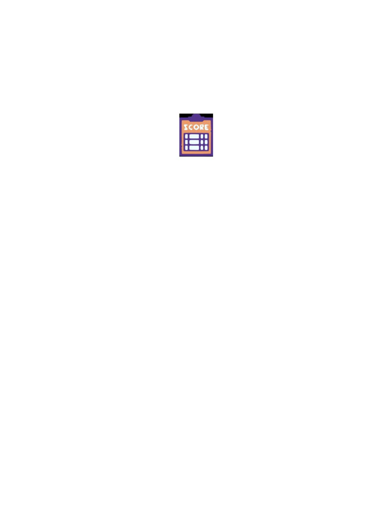
Interactive scorecard
Implementation guide
in collaboration of
UNICEF, HISP UiO, HISP Uganda &
HISP Tanzania
Version 0.1
© 2016 - 2017
Interactive Scorecard Team
Revision 1.0
2017-12-21 18:00:00
Version 2.14
Warranty:
THIS DOCUMENT IS PROVIDED BY THE AUTHORS ''AS IS'' AND ANY EXPRESS OR
IMPLIED WARRANTIES, INCLUDING, BUT NOT LIMITED TO, THE IMPLIED
WARRANTIES OF MERCHANTABILITY AND FITNESS FOR A PARTICULAR
PURPOSE ARE DISCLAIMED. IN NO EVENT SHALL THE AUTHORS OR
CONTRIBUTORS BE LIABLE FOR ANY DIRECT, INDIRECT, INCIDENTAL, SPECIAL,
EXEMPLARY, OR CONSEQUENTIAL DAMAGES (INCLUDING, BUT NOT LIMITED
TO, PROCUREMENT OF SUBSTITUTE GOODS OR SERVICES; LOSS OF USE, DATA,
OR PROFITS; OR BUSINESS INTERRUPTION) HOWEVER CAUSED AND ON ANY
THEORY OF LIABILITY, WHETHER IN CONTRACT, STRICT LIABILITY, OR TORT
(INCLUDING NEGLIGENCE OR OTHERWISE) ARISING IN ANY WAY OUT OF THE
USE OF THIS MANUAL AND PRODUCTS MENTIONED HEREIN, EVEN IF ADVISED
OF THE POSSIBILITY OF SUCH DAMAGE.
License:
Permission is granted to copy, distribute and/or modify this document under the terms of the
GNU Free Documentation License, Version 1.3 or any later version published by the Free
Software Foundation; with no Invariant Sections, no Front-Cover Texts, and no Back-Cover
Texts. A copy of the license is included in the source of this documentation, and is available
here online:
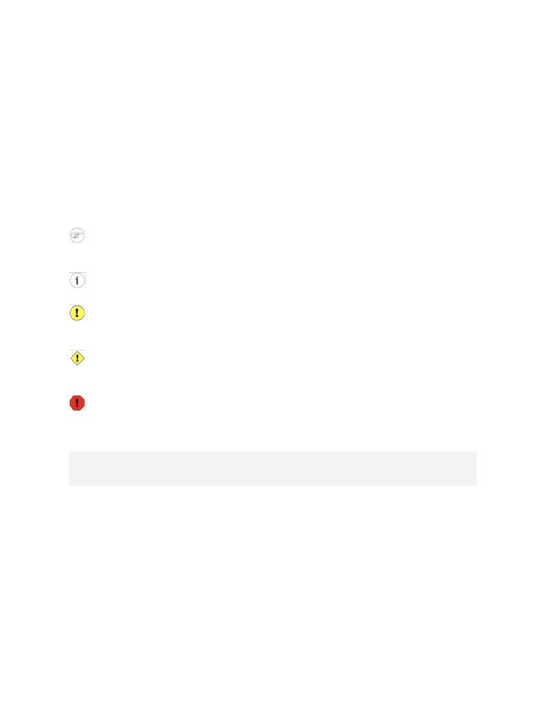
About this guide
The DHIS2 documentation is a collective effort and has been developed by the development
team and users. While the guide strives to be complete, there may be certain functionalities
which have been omitted or which have yet to be documented. This section explains some of
the conventions which are used throughout the document.
DHIS2 is a browser-based application. In many cases, screenshots have been included for
enhanced clarity. Shortcuts to various functionalities are displayed such as Data element >
Data element group. The ">" symbol indicates that you should click Data element and then
click Data element group in the user interface.
Different styles of text have been used to highlight important parts of the text or particular types
of text, such as source code. Each of the conventions used in the document are explained below.
Note
A note contains additional information which should be considered or a reference to more
information which may be helpful.
Tip
A tip can be a useful piece of advice, such as how to perform a particular task more efficiently.
Important
Important information should not be ignored, and usually indicates something which is required
by the application.
Caution
Information contained in these sections should be carefully considered, and if not heeded, could
result in unexpected results in analysis, performance, or functionality.
Warning
Information contained in these sections, if not heeded, could result in permanent data loss or
affect the overall usability of the system.
Program listings usually contain some type of computer code. They will be displayed with a
shaded background and a different font.
Commands will be displayed in bold text, and represent a command which would need to
be executed on the operating system or database.
Links to external web sites or cross references will be displayed in blue text, and underlined like
this..
Bibliographic references will be displayed in square brackets like this [Store2007]. A full
reference can be found in the bibliography contained at the end of this document.
Table of Contents
Chapter 1. Scorecard and demo server
9
1.1 Introduction to scorecard
9
1.2 About demo server and scorecard meta-data
10
1.2.1 Using DHIS2 Demo server
10
1.2.2 Scorecard metadata
10
Chapter 2. Installing of scorecard
11
2.1 Installation from within DHIS2
11
2.2 Installation from DHIS2 App store website
12
2.3 Installation Access credentials/Permissions.
14
2.4 Installation not successful.
15
Chapter 3. Opening and browsing scorecards
16
3.1 Opening of scorecard application
16
3.2 Clearing application cache
17
3.3 Browsing the scorecard application
18
3.4 Display/Listing of scorecards
19
3.4.1 List view
19
3.4.2 Card view
20
3.4.3 Thumbnail view
20
Chapter 4. Analysis with scorecard
22
4.1 Navigating the scorecard
22
4.2 Drill down analysis
22
4.2.1 Drill down analysis by Organization units
22
4.2.2 Drill down analysis by Data
23
4.3 Organization unit selection
23
4.3.1 Selection by levels
24
4.3.2 Selection by groups
24
4.3.3 Selection by user organization unit
25
4.4 Period selection
25
4.4.1 Fixed period selections
26
4.4.2 Relative period selections
26
4.4.3 Extended relative periods
27
Chapter 5. Scorecard layouts, headers and legends
28
5.1 Layout change with drag-n-drop
28
5.2 Scorecard header
28
5.3 Scorecard legend
29
5.4 Column headers, hints and tool-tips
29
Chapter 6. Additional options
31
6.1 Hide/show legend
31
6.2 Hide/show item number
31
6.3 Hide/show empty rows
32
6.4 Hide/show average row/column
32
6.5 Hide/show below/above average
33
6.6 Show top ten/five/three
34
6.7 Download Scorecard
34
6.8 Print Scorecard
35
Chapter 7. Context menu
36
7.1 Further analysis by entire column
36
7.2 Sort asc/desc by column
37
7.3 Best/worst by columns (top 10,5,3)
37
7.4 Hide/show column
37
7.5 Further Analysis by cell
37
7.6 Trend analysis by cell
38
7.7 Bottleneck analysis by cell
38
Chapter 8. Further analysis
39
8.1 Bottleneck analysis
39
8.2 Pivot table analysis
40
8.3 Chart analysis
40
8.4 Map analysis
40
8.5 Data dictionary
41
8.6 Operations on Further analysis
41
8.6.1 Layout selection
42
8.6.2 Downloading data of the pivot table further analysis
42
8.6.3 Downloading and printing of chart on further analysis
43
Chapter 9. Creating and managing scorecard
44
9.1 Labeling/Branding scorecard
44
9.1.1 Labeling of scorecard
44
9.1.2 Branding of scorecard
45
9.2 Choosing your data selections
45
9.2.1 Standard analytics data selections
46
9.2.2 Functions selections
47
9.3 Managing layouts and saving
48
9.3.1 Changing layout of scorecard
48
Chapter 10. Customizations and editing of scorecard
50
10.1 Access sharing settings
50
10.2 Startup period and organization unit selection
50
10.3 Grouping of cells in scorecard
51
10.4 Customization of cells
52
10.4.1 Column & cell labels
52
10.4.2 Cell Effective(Minimum) gap
52
10.4.3 Cell cut-of points range
53
10.4.4 Display effective gap arrows
53
10.4.5 Show legend colors
54
10.5 Stack two cells in single column
54
10.6 Color codes for cut-off points
55
10.7 Additional labels
56
Chapter 11. Bottleneck Analysis
57
11.1 Measuring Determinants
57
11.2 Bottleneck indicators
59
11.2.1 Individual indicator selections
60
11.2.2 Grouped indicator selections
61
11.2.2.1 Managing groups
61
11.2.2.2 Managing labels of grouped indicators
63
11.2.2.3 Color coding indicator by their groups
63
11.2.2.4 Real-Time Bottleneck Chart
63
Chapter 12. Help, tour guide & translation
65
12.1 Tour guide
65
12.2 Help and documentation
65
12.3 Translations
65
Chapter 13. Scorecard community and use cases
67
13.1 How to be part of the community
67
13.2 Development and implementation
68
13.3 Documentation and Translations
68
13.4 Data use academy scorecard setup and use cases
68
13.5 Existing DHIS2 Scorecard app use cases
68
13.5.1 Tanzania's RMNCAH Scorecard
69
13.5.2 Tanzania's PMTCT Scorecard
70
13.5.3 Tanzania's QIP Scorecard
70
13.5.4 Uganda's RMNCH Scorecard
71
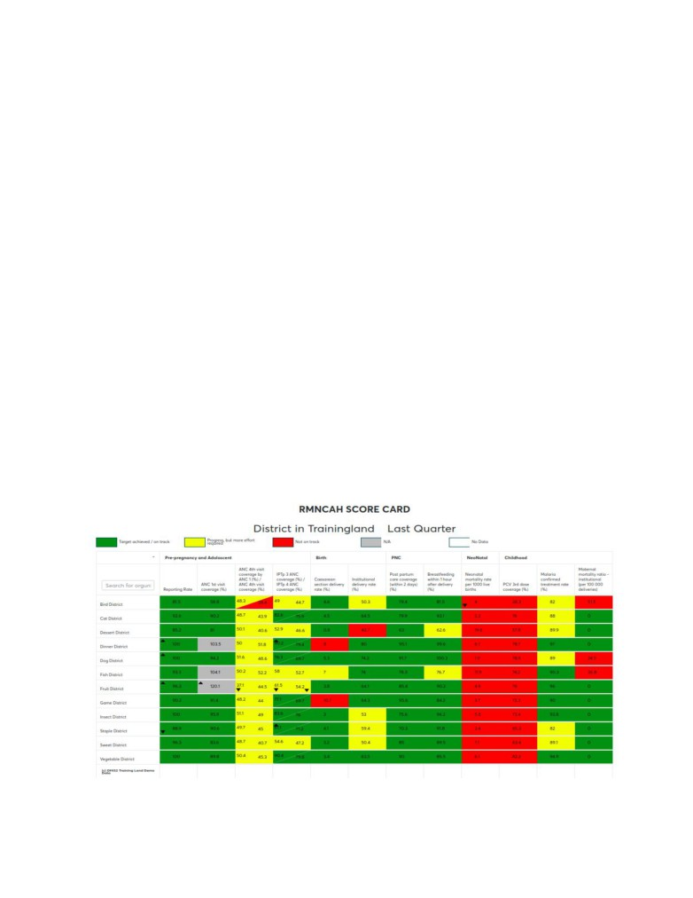
Chapter 1. Scorecard and demo server
1.1 Introduction to scorecard
In public health setting such as Ministries of Health, scorecard offers a useful and standardized
method for analysis with traffic lights color codes, combining related indicators into one table.
A scorecard can gives an overall view of the performance of a health program such as a
vaccination program, highlighting successes, weaknesses, and areas for improvement.
There are two ways to create a scorecard: you can use:
● The Scorecard app, as explained in this guide , or
This guide focuses mainly on the scorecard application, as explained below; The difference
between the two, is that the scorecard app is tuned for advanced scorecard analysis and is
developed and maintained by HISP Community developers, while the Pivot Table App is for
basic scorecard analysis and is developed and maintained by the Dhis2 core team. With both
scorecard app and pivot table app, you can download and use your scorecard offline and share it
on the DHIS2 dashboard. With a scorecard app, you have more advanced control and power to
easily create and analyse multiple elements and dimensions in your data. Additionally the
scorecard app gives an opportunity to cascade your analysis by including bottleneck indicators
in the scorecard dashboard as well as analyses your data with broad spectrum of visualization
tools, such as pivot table, charts and maps.
Figure 1.1-A: Standard layout of RMNCAH Scorecard
1.2 About demo server and scorecard meta-data
DHIS2 Scorecard team maintains a demonstration server at
application in DHIS2.
1.2.1 Using DHIS2 Demo server
To use the scorecard demo server you will have to login into the server, you can use the login
credentials that are displayed on the login page to login and explore the amazing features of the
scorecard app.
1.2.2 Scorecard metadata
The Scorecard borrows its meta-data from the general DHIS2 data source and uses this to create
a data store for ease of analysis. Scorecard indicators and indicator groups are managed using
the DHIS2 Indicator maintenance App. The Scorecard App is also integrated with function
maintenance App, used to create custom indicators. Custom Indicators are indicators whose
definition and calculation cannot easily be created using the Indicator maintenance app in the
DHIS2.
Chapter 2. Installing of scorecard
Scorecard application is completely free and open source, and it is available on DHIS2 app store
support.
To install any application into DHIS2, requires superuser privilege, make sure your account has
necessary authorities to install the application, or contact DHIS2 support team for acquisition of
account with privileges for installation of apps.
There are two ways of installing interactive scorecard into your DHIS2 instance.
2.1 Installation from within DHIS2
This installation approach is the most direct, but only available on DHIS2 running version 2.28
and above.
Step 1:
Simply open Apps management by clicking on Apps search menu or apps icon on the top bar to
locate Apps Management, click to bring down list of apps, or search “Apps Management”.
Open the Apps management to go to apps listing See figure below:
Figure 2.1-A: Apps management on search menu
Step 2:
Once Apps management is open, go to Apps store panel, accessible on the left navigation menu,
a list of online applications for installation will show up, look for interactive scorecard.
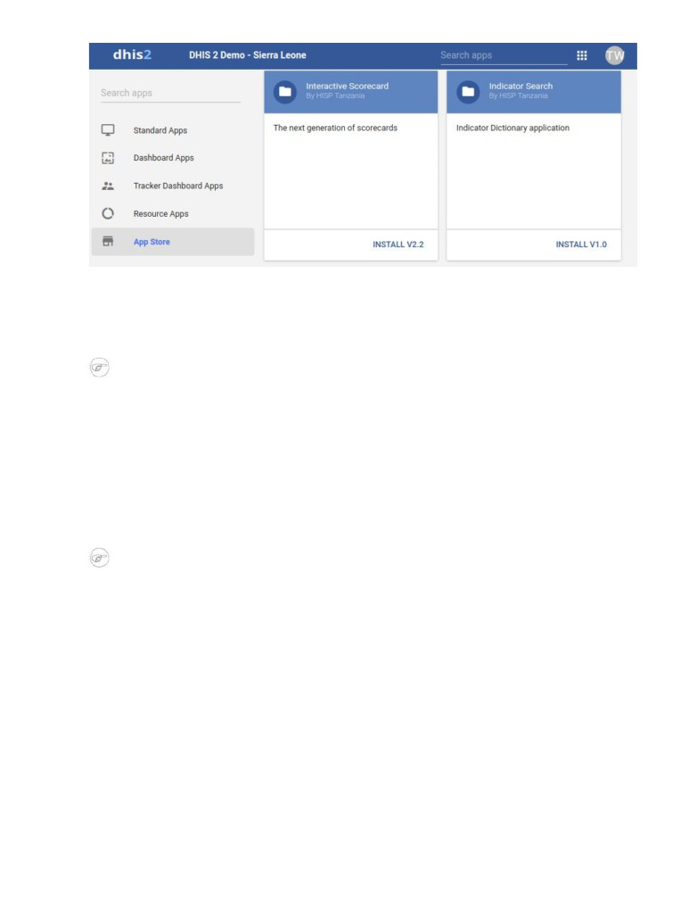
Figure 2.1-B: App store listing, with interactive scorecard
Once found, click install to install the application. When done installing, the interactive
scorecard will be accessible from the search menu.
Note
This step is only successful is you have an internet connection and your DHIS2 instance is
accessible online.
2.2 Installation from DHIS2 App store website
This approach of installing DHIS2 requires visiting DHIS2 App store website, downloading a
zip file of the latest stable build of scorecard app, and manually installing it into DHIS2.
This approach is recommended for all DHIS2 instances running on version 2.27 and below.
Note
Ensure that you have good and stable internet connection to download the zip file.
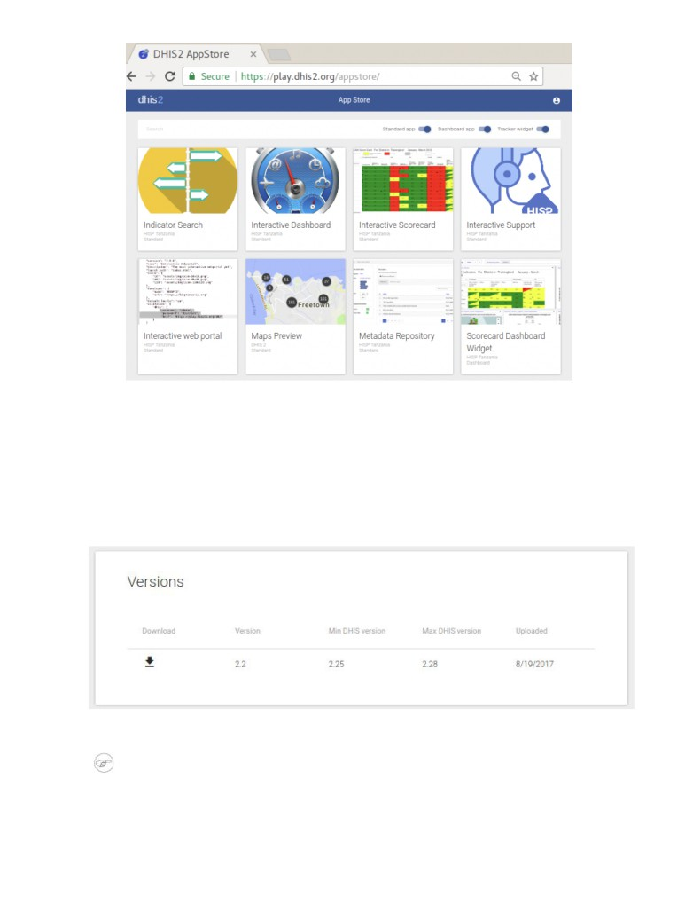
Figure 2.2-A: Apps listing in DHIS2 Appstore
Step 1: Downloading the compatible version from appstore
Once on DHIS2 App store, locate interactive scorecard application, and click it to get the list of
available versions of the scorecard. Pick the most latest version of the scorecard and download a
zip file of the latest build into your local hard disk.
Figure 2.2-B: List of versions and supported version of DHIS2
Note
Zip file name may have cryptic alphanumeric name such as “3ad63731-a75d-4adb-95a1-
4f646e481c20”. You may rename zip file to easily locate it in the future, with naming such as
“scorecard- v2.x.zip”, where “x” is version number of your build.
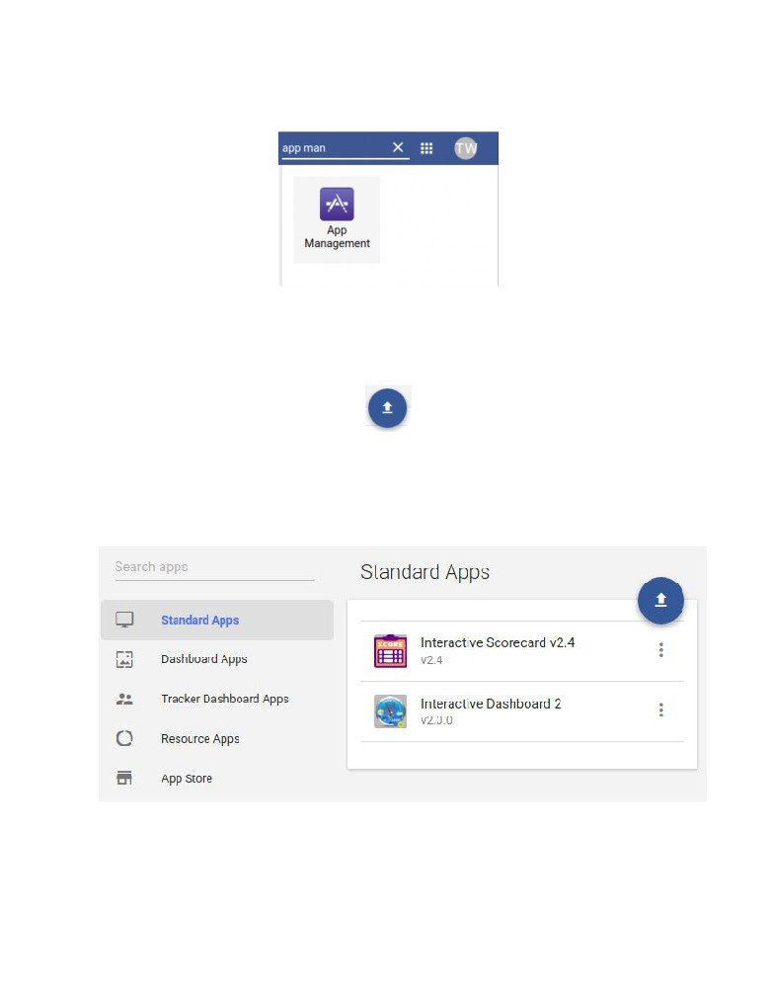
Step 2: Uploading the app into Dhis2
Click on Apps search menu or apps icon on the top bar to locate Apps Management, click to
bring down list of apps, or search “Apps Management”.
Figure 2.2-C: Apps management on search menu
Open Apps management to see and manage list of installed applications on DHIS2, Interactive
scorecard app can be installed by clicking the upload icon.
Figure 2.2-D: The upload Icon
Once installed, interactive scorecard application will be enlisted under standard apps
Figure 2.2-E: Interactive scorecard on list of installed standard applications
When done installing, interactive scorecard will be accessible from the search menu. If
scorecard doesn’t appear on your menu, it may be not visible for one of the two issues.
2.3 Installation Access credentials/Permissions.
While scorecard application may be installed in your DHIS2 instances, you may not have
necessary permissions to view it. In such cases communicate with DHIS2 moderator or DHIS2
support team for the application to be assigned to one of your user roles.
2.4 Installation not successful.
Scorecard application will not be visible in your application, if it’s either not yet installed in
your DHIS2 instance or installation process failed for technical reasons.
Most common failure to install, results from misconfiguration of read/write permissions of the
installation folder on the server hosting dhis2. Misconfiguration of permission can also result
from denial of ability to delete an installed application.
To resolve this, back-end access of DHIS2 is required, to assign proper ownership and
read-write permission of the folder for holding installed apps.
Note
Location of folder for installed apps varies depending on the version of DHIS2 Installation.
1.
From version 2.27 going down, the folder for installed apps is located in
[DHIS2_HOME]/apps
2.
From version 2.28 and above, the folder for installed apps is located in
[DHIS2_HOME]/files/apps
For more information on how to create and install applications on DHIS2 please visit
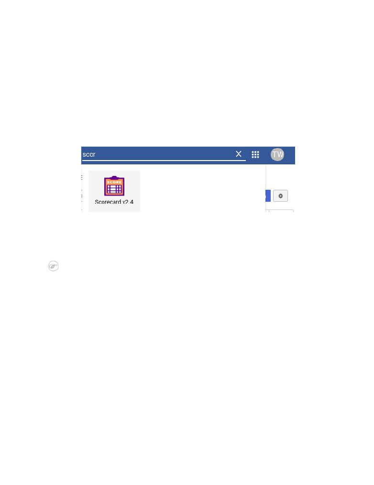
Chapter 3. Opening and browsing
scorecards
Scorecard application can be found in the Apps menu, if scorecard application is not yet
installed in your DHIS2 instance or installation has issues, refer to the installation instruction
(Chapter 2) of this documentation for further guidance.
3.1 Opening of scorecard application
Open scorecard by locating it in Apps search menu or apps icon on the top bar, click to bring
down list of apps, or search “scorecard”.
Figure 3.1-A: Scorecard application on apps menu.
Once open, scorecard application will bring list of created scorecards, or when no scorecard
exists, a step by step instruction on how to create scorecard.
Note
If scorecard application is taking too long to load, and you’re not on a slow network, make sure
you have cleared your browser cache.
Scorecard makes good use of cached files for better offline experience, as a result, when
installing higher version, scorecard may use older version of cached files and thus break down
while loading.
Figure 3.1-B: Scorecard application in a continuous state of loading.
3.2 Clearing application cache
Approaches to clear application cache and browser interface, vary from browser to browser, but
the common standard keyboard shortcut for all browsers is “CTRL+SHIFT+DELETE”.
Accessing interface for clearing browser cache can be done via the following approaches:
•
Google chrome: Go to the menu icon on the top right corner, and click it to open, go to
more tools menu, and choose “Clear browsing data”. Once interface is open, Make sure
“Clear the following items from” is set to “The beginning of time”.
•
Mozilla Firefox: Go to the menu icon on the top right corner, and click it to open, go to
Library, and go to History, and choose “Clear recent history”. Once interface is open, Make
sure “Time range to clear” is set to “Everything”, and “Details” option is expanded to show all
details options. Once on the clear browsing data or recent history, tick “Cache”, “Cookies”,
“Hosted app data” or “Offline Website data”. To clear all cached files, cookies and locally
stored data by scorecard.
Figure 3.2-A: Menu icons in Google chrome and firefox
Note
These will also clear all cache information and cookies from other websites you’ve visited in
your browser.
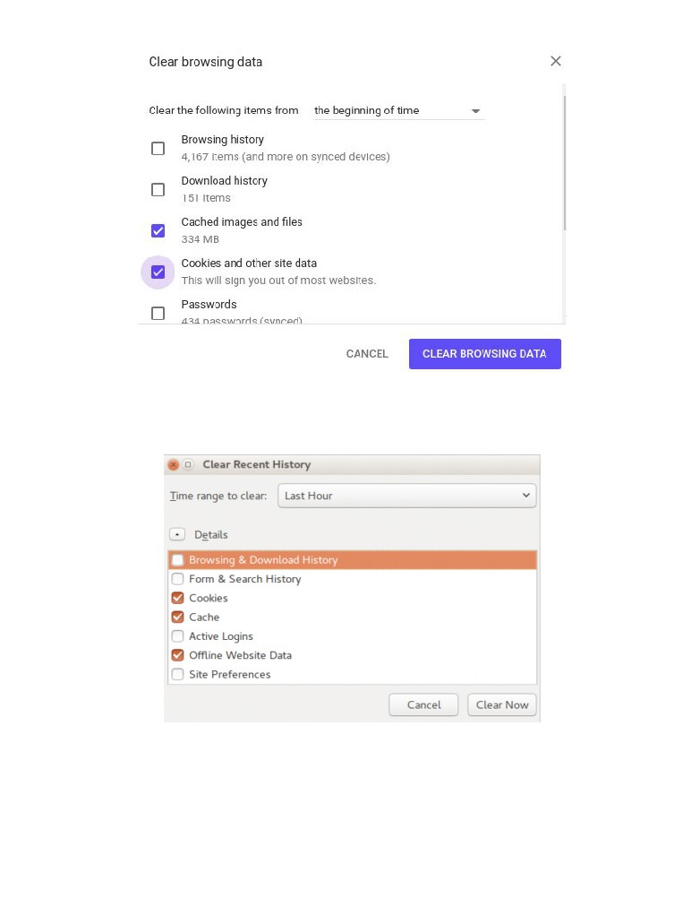
Figure 3.2-B: Google chrome interface for clearing browser cache
Figure 3.2-C: Mozilla firefox interface for clearing browser cache
3.3 Browsing the scorecard application
Once a scorecard application is open, it will display a list of all scorecards the user has
permission to access. Items are by default displayed with list view, showing three items at a
time, with pagination to access more scorecards. All scorecards are sorted by names in
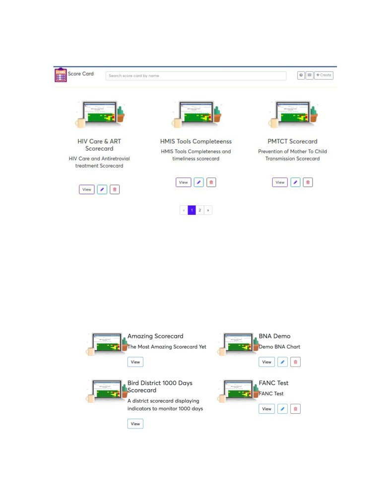
ascending order.
To locate scorecard, use the search panel to search by name or description of the scorecard,
search will locate all favorites user have access to and list them sorted in ascending order.
Figure 3.3-A: Default list view of scorecard application
3.4 Display/Listing of scorecards
There are three standard types of scorecard listings to allow navigation and traversing through
long list of scorecards
3.4.1 List view
This is the default listing scorecard, displaying three items per page, while providing pagination
options to move between pages.
Figure 3.4.1-A: List view of scorecard application
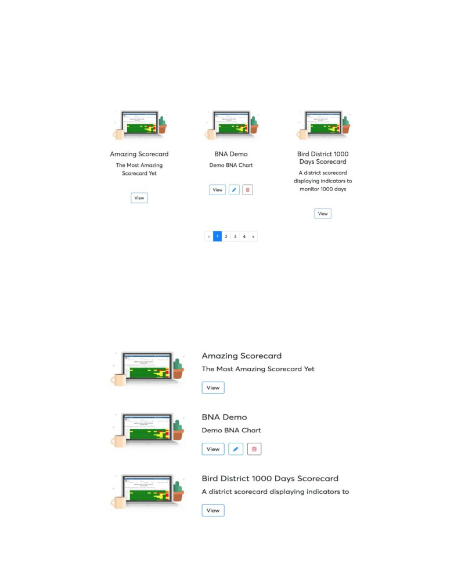
3.4.2 Card view
This displays all scorecards without paginations in multiple rows with two columns throughout,
allowing vertical navigation of scorecards.
Figure 3.4.2-A: Card view of scorecard application
3.4.3 Thumbnail view
This displays all scorecards without pagination in multiple rows with one column throughout,
allowing more detailed view of each single scorecard.
Figure 3.4.3-A: Thumbnail view of scorecard application
To visualize data with scorecard, click a particular scorecard of interest. For more information
on all functionalities available for navigating scorecard, visit the “Analysis with scorecard”
section of the documentation.
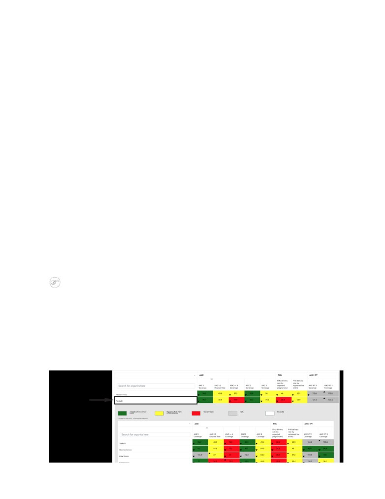
Chapter 4. Analysis with scorecard
Once the scorecard is open, you can analyze the data visualized by the scorecard through
different dimensions using various components offered by the scorecard app.
4.1 Navigating the scorecard
For analysis purposes the scorecard app allows you to
●
Switch between organization units and period types
●
Switch between layouts on the fly
●
Show and Hide some components and data
●
Print and Download scorecard
●
Sort by data values in ascending and descending orders
●
Performing Trend and Bottleneck analysis
All explained in this chapter.
4.2 Drill down analysis
Scorecards support drill down analysis from scorecard rows, where row headers can be clicked
to reveal lower level of analysis. By default scorecard lists organization units in rows and data
in columns, thus default drill down analysis accessible to user is by organization units.
Data in columns can be moved to rows with drag and drop layout change, thus supporting drag
and drop on indicators in rows, where organization units will be moved to columns.
Note
Drill down on indicators is only supported for indicators with related indicators assigned to
them.
4.2.1 Drill down analysis by Organization units
In order to drill down across organization unit levels just click the name of the children
organization level and the scorecard of the particular organization unit will appear under the
row of that organization.
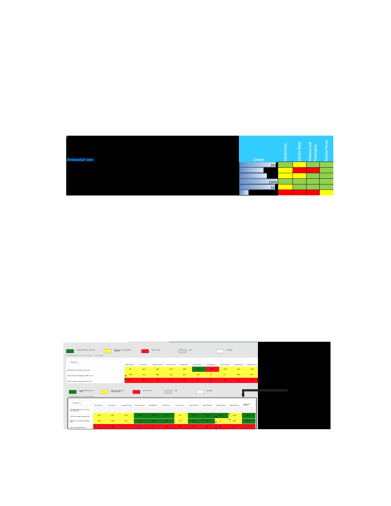
Figure 4.2.1-A: Drill down analysis by orgunit
4.2.2 Drill down analysis by Data
In order to drill down across data, indicators names/headings needs to be on the rows of the
scorecard, this can be achieved by drag and drop of indicators heading from columns to rows
and clicking of row headers(indicator names) to drill down.
Among use cases of drill down analysis by indicators includes mapping of performance from
bottleneck chart to scorecard.
Figure 4.2.2-A: Mapping of performance indicators from bottleneck chart to scorecard
Only indicators with related indicators will support drill down analysis, thus only indicators
with bottleneck analysis icon will have drill down capability showing the bottleneck indicators
on lower level, if any of the lower level indicators also have related indicators assigned to them,
drill down can proceed further down.
With utilization of scorecard layout change feature (see scorecard layouts chapter) and support
related indicator analysis through related indicators/ bottleneck analysis by individual indicator
selections , When viewing the scorecard at a parent level, you can drill down to see scorecard
of children levels.
Figure 4.2.2-B: Drill down analysis by indicators
4.3 Organization unit selection
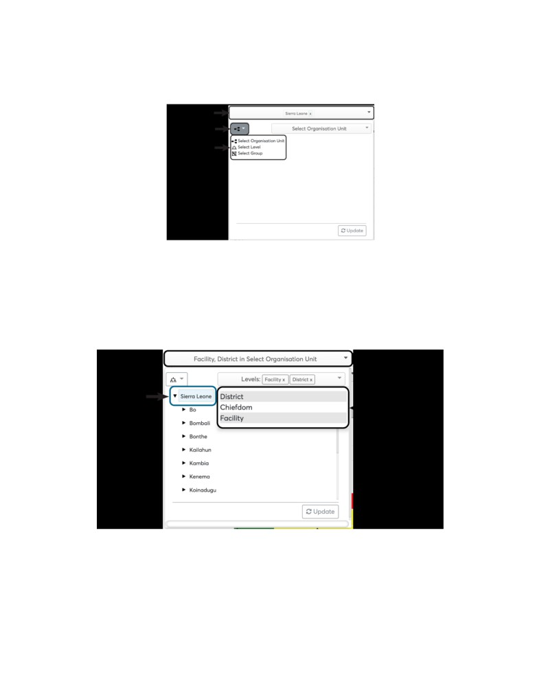
The Scorecard app allows you to make organization unit selections based on groups, levels and
user organization units, these are known as selection models.
All organization unit selections types begin with clicking the select option button that displays
the selected organization unit. Then click the branching icon.
Figure 4.3-A: Selection of orgunits
4.3.1 Selection by levels
From the selection mode dropdown menu click “Select Level” then navigate to the button on
the right that reads “Select Organization Unit Levels”, from the dropdown list of Levels, you
can then make your selections by clicking the desired levels to view on your scorecard.
Figure 4.3.1-A: Selection of org units by levels
4.3.2 Selection by groups
From the dropdown menu that appears click “Select Group” then navigate to the button on the
right that reads “Select Organization Units Group”, from the dropdown list of Groups, you can
then make your selections by clicking the desired groups to view on your scorecard.
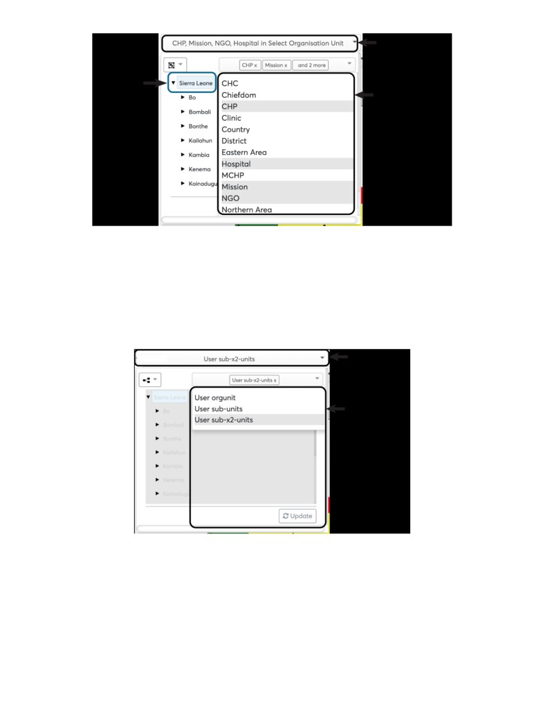
Figure 4.3.2-A: Selection of org unit by groups
4.3.3 Selection by user organization unit
From the dropdown menu that appears click “Select Organization Unit” then navigate to the
button on the right that reads “Select Organization Unit”, from the dropdown list, you can then
make your selections with respect to your organization by clicking the desired option unit to
view on your scorecard.
Figure 4.3.3-A: Selection of org units by user orgunit
4.4 Period selection
The scorecard app allows you to make period selections for fixed periods, relative periods and
extended relative periods.
All period selections types begin with clicking the select option button that displays the starting
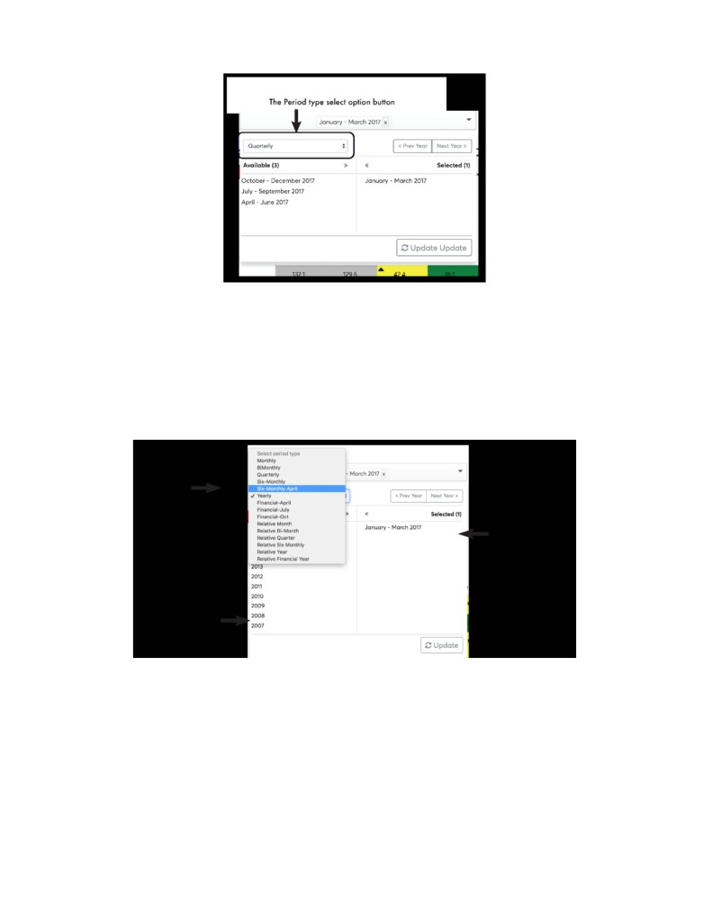
period. Then clicking on the period type select option button which lists all the period types.
Figure 4.4-A: Period selection
4.4.1 Fixed period selections
To select fixed periods, start by selecting a period type from the period type list. You can then
select periods from the list of available periods.
Figure 4.4.1-A: Fixed period selections
4.4.2 Relative period selections
To select relative periods start by selecting a period type from the period type list. You can then
select periods from the list of available periods.
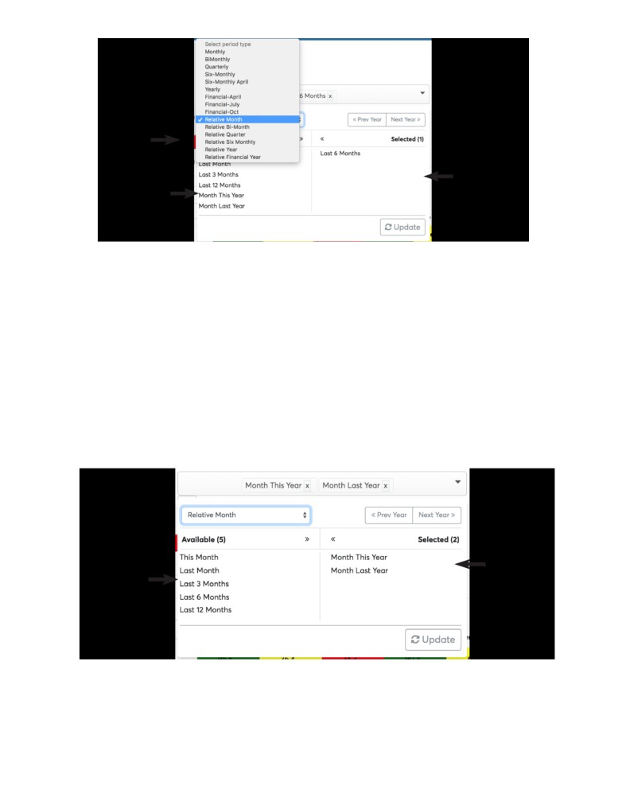
Figure 4.4.2-A: Relative period selections
4.4.3 Extended relative periods
Extended relative periods are relative periods that do not ship out with the dhis2 by default.
These extended relative periods include : Quarters this year, Quarters last year, Months this year
and Months last year.
To select extended relative periods start by selecting a period type from the period type list. You
can then select the extended relative periods from the list of available periods.
Figure 4.4.3-A: Extended relative periods
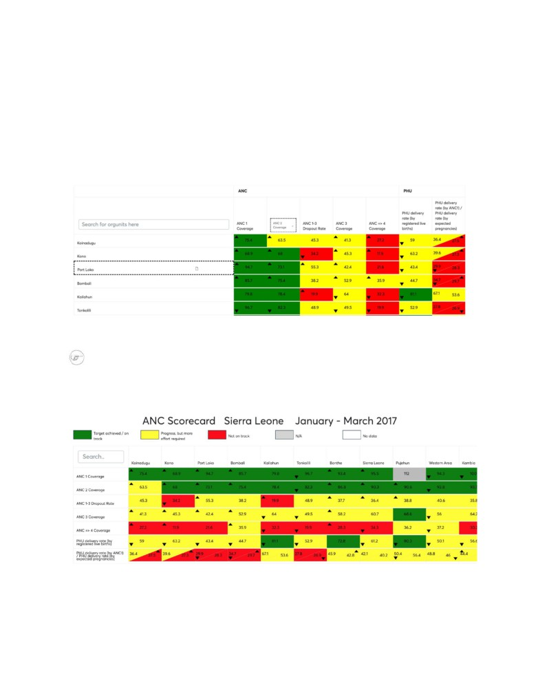
Chapter 5. Scorecard layouts, headers and
legends
5.1 Layout change with drag-n-drop
When viewing the scorecard you can change layout by simply clicking at column labels(text),
and dragging it to a row heading.
This also works when dragging a row heading to a column heading.
Figure 5.1-A: Layout before change of rows to columns with drag and drop
Note
Dashed lines indicate the drag n drop zones.
Figure 5.1-B: Layout after change of rows to columns with drag and drop
5.2 Scorecard header
The scorecard header appears on the top of scorecard.
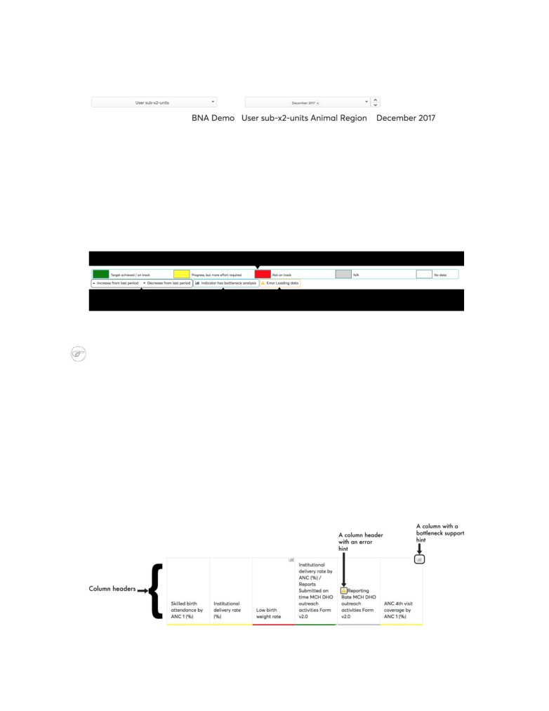
The scorecard header is by default composed with the Scorecard Title, the selected Organization
Unit(s) and the selected period(s)
Figure 5.2-A: The scorecard header
5.3 Scorecard legend
The scorecard legend is displayed under the scorecard header. By default all scorecard will start
with legend displayed.
The scorecard legend gives meaning on the colors displayed on the scorecard visualization.
Figure 5.3-A: The scorecard legend
Note
Gray color for Not Applicable (N/A) is used when values falls out of range of the minimum and
maximum of existing color code classes.
White color code is used when there’s no value (returned results are empty/null not zero)
5.4 Column headers, hints and tool-tips
Column headers appear on top of every column. By default, a column header is the
conventional name of the particular data selection.
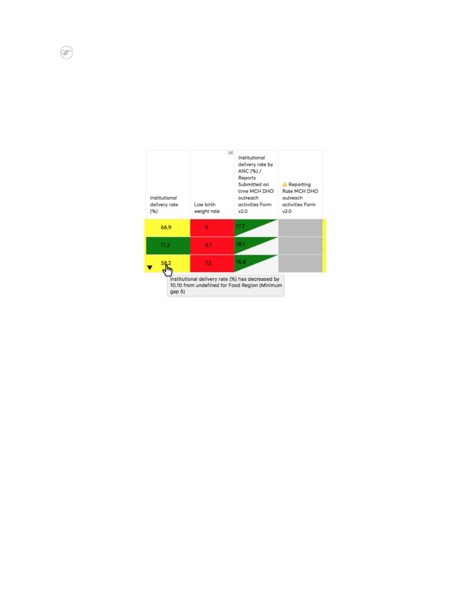
Figure 5.4-A: The column header of a scorecard with hints.
Note
The most common errors are internal server errors or failed network operations while loading
data, oftenly abbreviated with error codes (409, 404, 502, etc..). Check with your system
administrator on indicators and the server setup to resolve the errors.
Tooltips appear when you hover on the cells that have deviated from the previous period
selection. The tooltip will brief on the previous value, the deviation and the minimum value that
makes a deviation count as significant.
Figure 5.4-B: A tooltip on a cell of a scorecard.
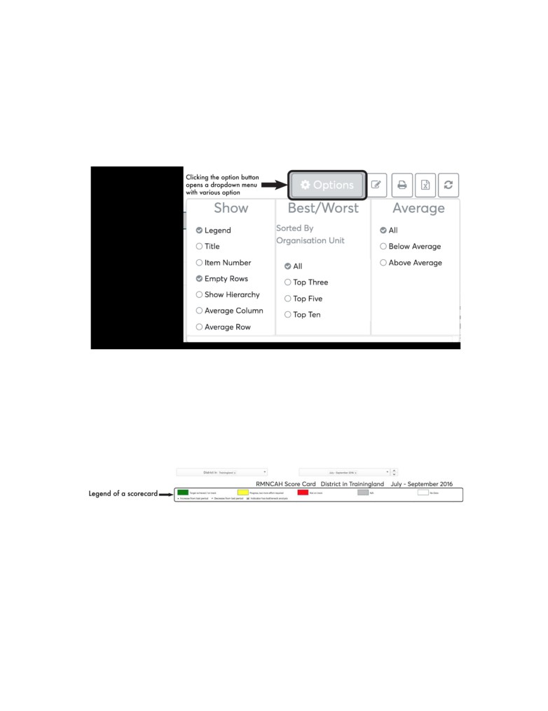
Chapter 6. Additional options
Scorecard application allows user to Customize the look of scorecard. add numbering, ranking,
hide/show legend, average column and row.
Scorecard options can be modified in the viewing or the creation interfaces by clicking the
“Options” button.
Options are divided in three sections: Show/Hide, Best/Worst and Average.
Figure 6-A: The available settings that can be regulated from within the options menu
6.1 Hide/show legend
To show the legend, make sure the Legend checkbox is checked.
To hide the legend, make sure the Legend option is unchecked.
Figure 6.1-A: The legend displaying on top of the scorecard
6.2 Hide/show item number
To show the item number, make sure the Item Number checkbox is checked.
To hide the item number, make sure the Item Number option is unchecked.
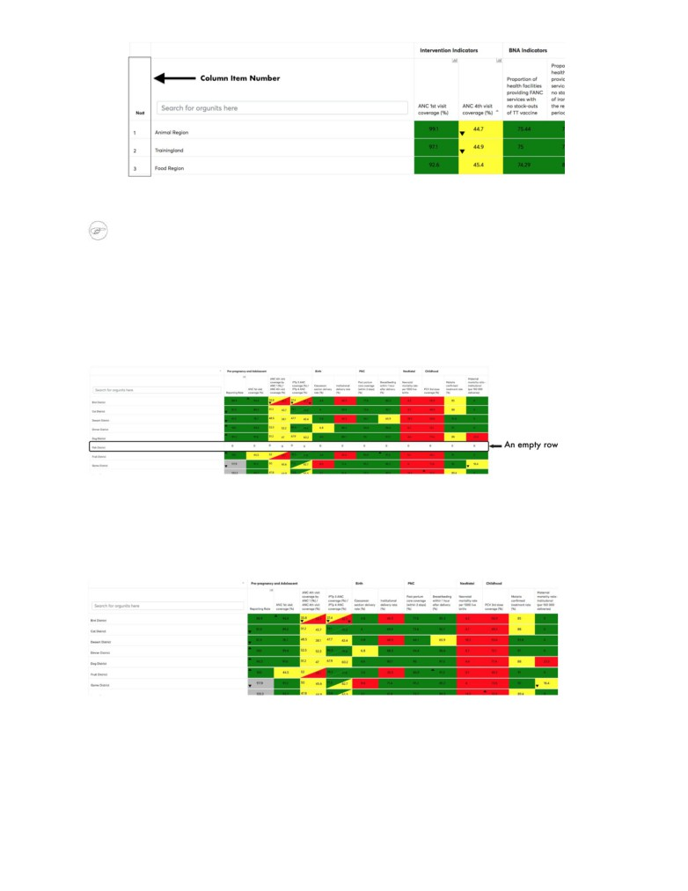
Figure 6.2-A: The Item Number column displaying on the scorecard
Note
Item number is always ascending following the current column used for sorting, which will
contain up/down arrow indicating column used for sorting in ascending/descending order
6.3 Hide/show empty rows
To show empty rows, make sure the Empty Rows checkbox is checked.
Figure 6.3-A: Scorecard with empty row on organization units
To hide the empty rows, make sure the Empty Rows option is unchecked.
Figure 6.3-B: Scorecard with hidden empty rows
6.4 Hide/show average row/column
To show average row or average column, make sure the Average Column or Average Row
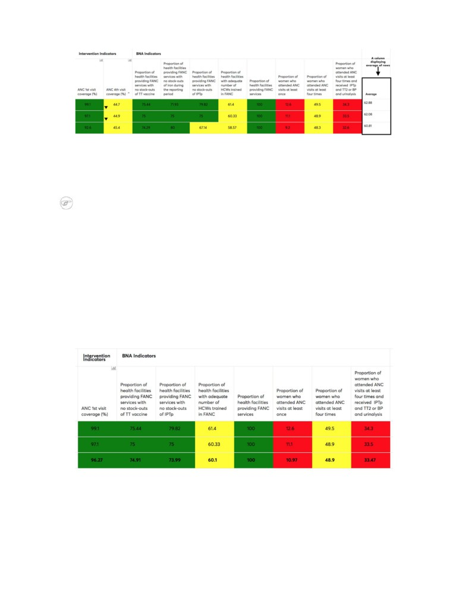
checkbox, respectively is checked.
Figure 6.4-A: The average column displaying on the scorecard
To hide average row or average column, make sure the Average Column or Average Row
checkbox, respectively is unchecked.
Note
Average columns may not always make sense depending on set of indicators under display, it
only make sense mostly when values are of the same nature or range, e.g. percentage or client
counts.
6.5 Hide/show below/above average
To show below average or above average performance, make sure the below average or the
above average checkbox, respectively is checked.
To hide below average or above average performance, make sure the below average or the
above average checkbox, respectively is unchecked.
Figure 6.5-A: A scorecard displaying rows that have performed above average.
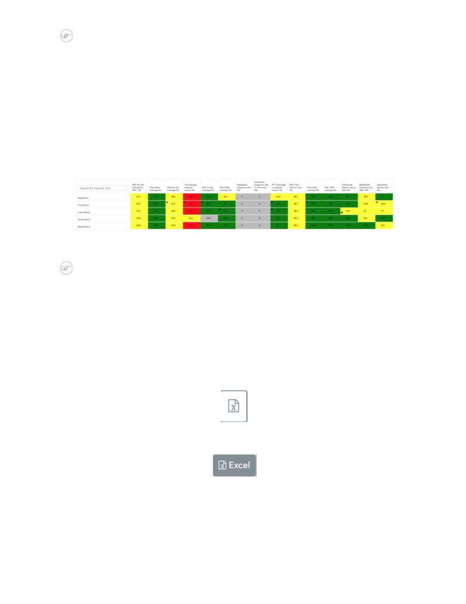
Note
The Average values used is by default to sort scorecard rows for hiding/showing above and
below average are based on column used for sorting(sorted column), if sorted column is
organization unit, average column is used.
6.6 Show top ten/five/three
To show top ten/five or three performance, make sure the ten/five or three checkbox,
respectively is checked.
To hide top ten/five or three performance, make sure the below average or the above average
checkbox, respectively is unchecked.
Figure 6.6-A: A scorecard displaying the top five performing rows.
Note
Top ten/five/three is based on sorted column, which by default is organization unit column.
6.7 Download Scorecard
You can download the scorecard in excel format by clicking, the “Excel” button. This shall
download the scorecard in csv format and you can perform any desired operations on an excel
file handling application offline. The “excel” button can be spotted on top of the scorecard
header next to the edit button.
Figure 6.7-A: A collapsed excel button for downloading.
Figure 6.7-B: An expanded download to excel button.
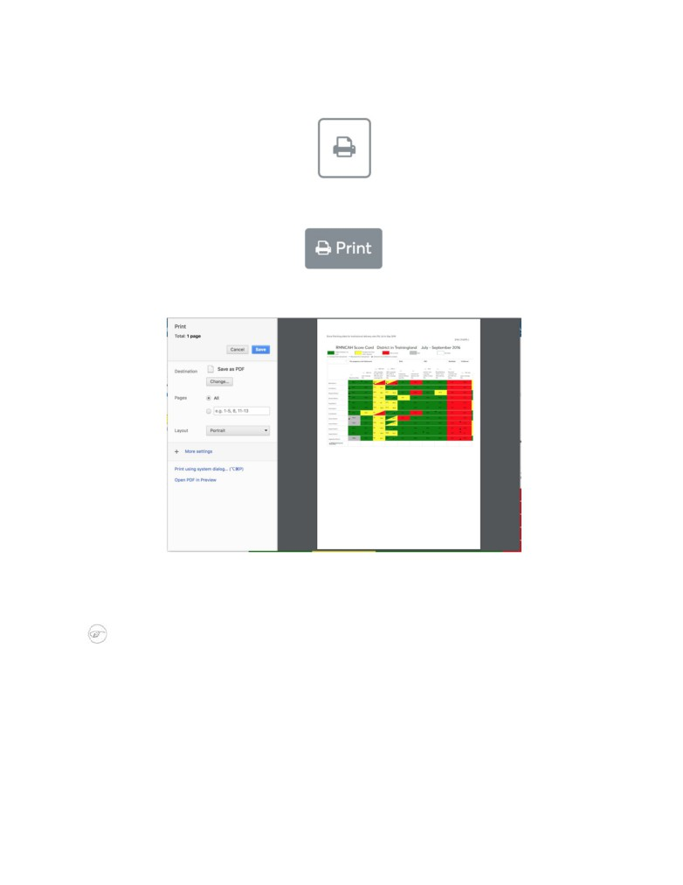
6.8 Print Scorecard
To print the scorecard simply click the Print button.
Figure 6.8-A: A collapsed print button.
Figure 6.8-B: An expanded print button.
Figure 6.8-C: Downloading a scorecard.
Note
To hide headers and footer containing page url or page name, and get colored PDF document.
● On Chrome browsers, Expand “More settings” and untick headers and footer, choose
destination printer to “Save as PDF” to download colored PDF document.
● On Firefox, open “Options” tab and set header and footer to “--blank--”, choose
destination printer to “Print to file” to download colored PDF document.
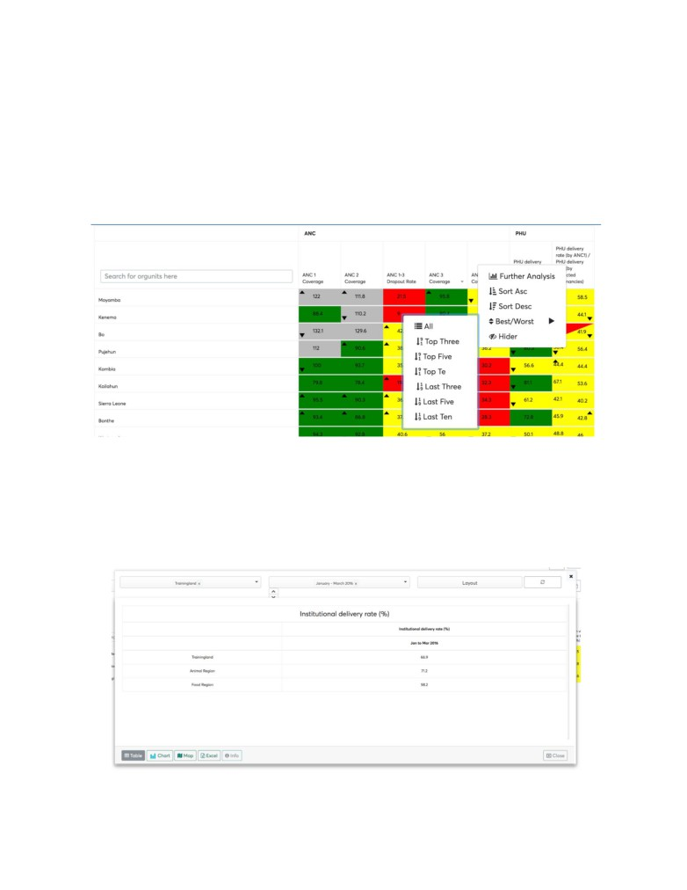
Chapter 7. Context menu
The scorecard app offers two types of context menu for quick access of additional features and
scorecard capabilities. The two context menu includes:
1. Column context menu (accessible via headers)
2. Cell context menu (accessible via cells)
The column context menu can be accessed by right clicking on a column header, and a cell
context menu can be accessed by right clicking on a particular cell.
Fig 7-A: The column context menu when viewing a scorecard.
7.1 Further analysis by entire column
From the Column context menu, clicking “Further Analysis” opens a modal with a pivot table
visualizing the data of the column.
Fig 7.1-A: A modal with a pivot table visualizing the data of the column.
Navigation within the further analysis modal is explained in Chapter 8.
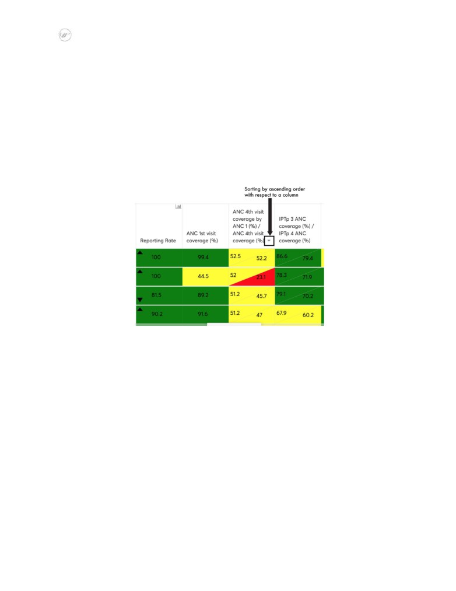
Note
Further analysis by entire column uses entire selections in rows, by default selection in rows are
organization units.
7.2 Sort asc/desc by column
From the Column context menu, clicking “Sort Asc” will sort the data with respect to the
ascending order of the column content and an arrow pointing downwards shall display next to
the column name to signify that the values decrease going down the column.
Similarly, clicking the “Sort Desc” will sort the data with respect to the descending order of the
column content and an arrow pointing upwards shall display next to the column name to signify
that the values increase going down the column.
Fig 7.2-A: Sorting by ascending order of the second column.
7.3 Best/worst by columns (top 10,5,3)
From the Column context menu, you can view the Best performers by choosing Top 3,5,10.
Similarly, you can view the Worst Performers by choosing Last 3,5,10.
7.4 Hide/show column
To Hide a column, simply right click on the column head and click Hide.
If there are any hidden columns, to show them right click on the column head and the context
menu will have have a “show all” option.
7.5 Further Analysis by cell
From the cell context menu, clicking “Further Analysis” opens a modal with a pivot table
visualizing the data of the cell.
Fig 7.5-A: The column context menu when viewing a scorecard.
7.6 Trend analysis by cell
On the cell context menu, you can analysis the trend of the data for the last 3,6,12 months, last 4
quarters or the last 5 years by clicking trend analysis and picking a period of interest.
7.7 Bottleneck analysis by cell
From the cell context menu, if an indicator has related indicators then you will see an option
that allows you to perform bottleneck analysis. Further explanation on bottleneck analysis can
be found in Chapter 12.
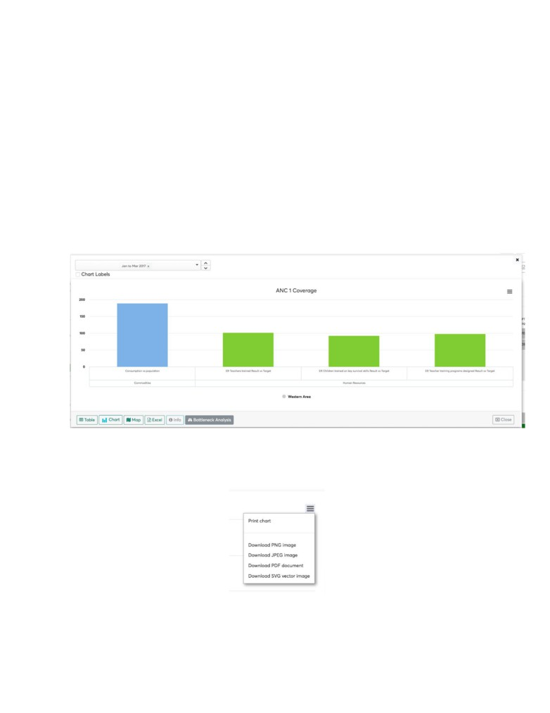
Chapter 8. Further analysis
As hinted earlier the further analysis menu can be access via the context menu. This chapter
explains deeply on the operation that can be performed in the further analysis module.
8.1 Bottleneck analysis
On the Interactive Scorecard if a data selection support bottlenecks and option to perform
bottleneck analysis will be visible when performing further analysis. Clicking the Bottleneck
analysis button will display a chart of the indicators related to the data selections.
To show chart labels click on the chart labels checkbox which appears below the period
selection box.
Fig 8.1-B: Bottleneck analysis of the ANC 1 Coverage across two groups ; Commodities and Human Resource
Clicking on the sandwich icon will give options for downloading the bottleneck analysis chart.
Fig 8.1-C: Download options for the bottleneck analysis chart accessible by clicking sandwich icon.
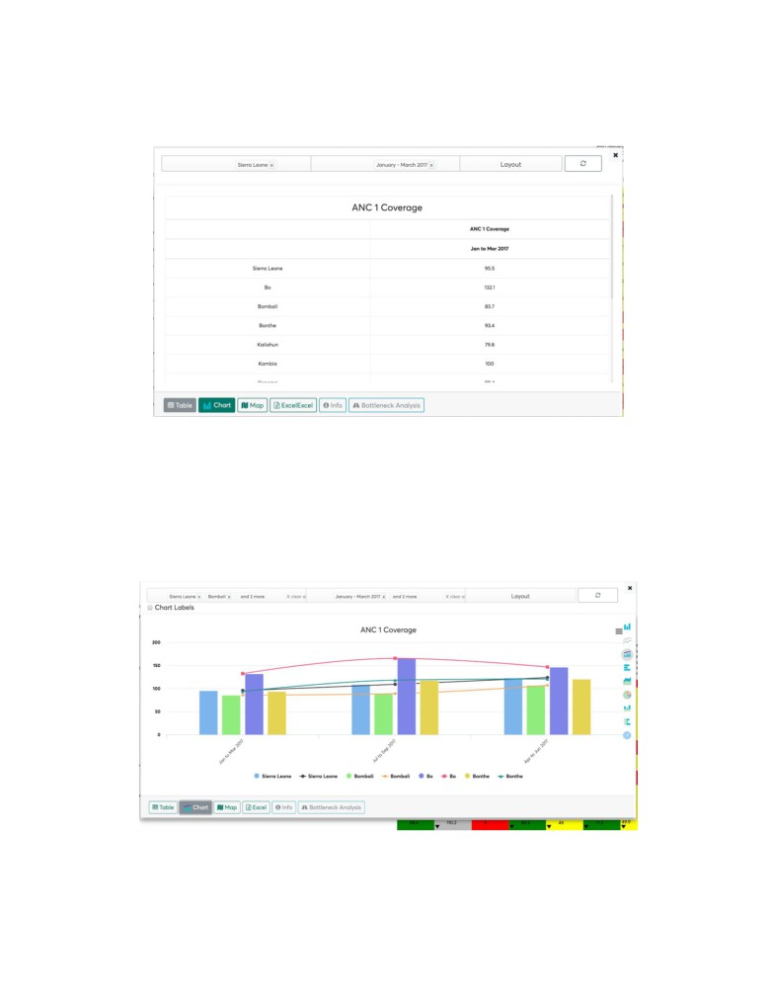
8.2 Pivot table analysis
Pivot table further analysis, visualizes the data in tabular manner. You can switch between
organization unit and periods but also you can change the table layout.
Fig 8.2-A: Pivot table analysis on the ANC 1 Coverage column
8.3 Chart analysis
Chart further analysis, visualizes the data in graphical manner. You can switch between
organization units and periods but also you can change the chart layout and switch between
various chart types (i.e. bar chart, stacked bar chart, line chart etc.).
Fig 8.3-A: Chart analysis on the ANC 1 Coverage column using the combined chart analysis
8.4 Map analysis
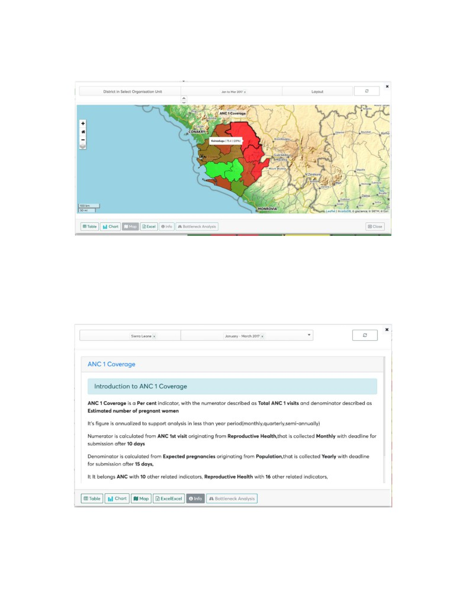
Map further analysis, visualizes the data on map. You can switch between organization unit and
periods but also you can switch between various base maps that your data would be drawn on
base layer. Currently supported base layers includes Map surfer, OSM Dark, Topography Maps,
Earth Imagery,OSM Black and White, OSM Hot and Stamen Toner.
Fig 8.4-A: Map analysis on the ANC 1 Coverage column using topographic base map.
8.5 Data dictionary
When performing further analysis, you can open the data dictionary for the data selection item
of the column/cell by clicking the info button.
Fig 8.5-A: Information of the data selection item of the column/cell on the data dictionary
8.6 Operations on Further analysis
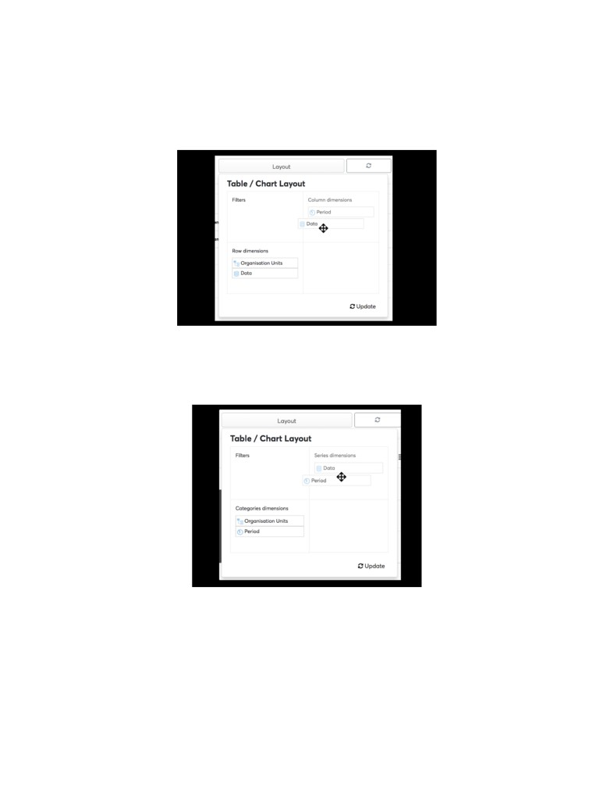
You can perform more operations within the further analysis module, such as downloading
scorecard, printing it or switching of layout.
8.6.1 Layout selection
On further analysis you can change layout for pivot table by drag-n-drop across filters, row
dimensions, and column dimensions.
Fig 8.6.1-A: Panel for switching the further analysis pivot table layouts across filters, column and row dimensions.
Similarly, you can change layout for chart by drag-n-drop across filters, category, and series
dimensions.
Fig 8.6.1-B: Panel for switching the further analysis chart layouts across filters, series and categories dimensions.
8.6.2 Downloading data of the pivot table further analysis
You can download the column or cell data observed during further analysis by pivot table into
excel format by clicking, the “Excel” button located on the bottom of the further analysis
button. This shall download the data in csv format and you can perform any desired operations
on an excel file handling application offline.
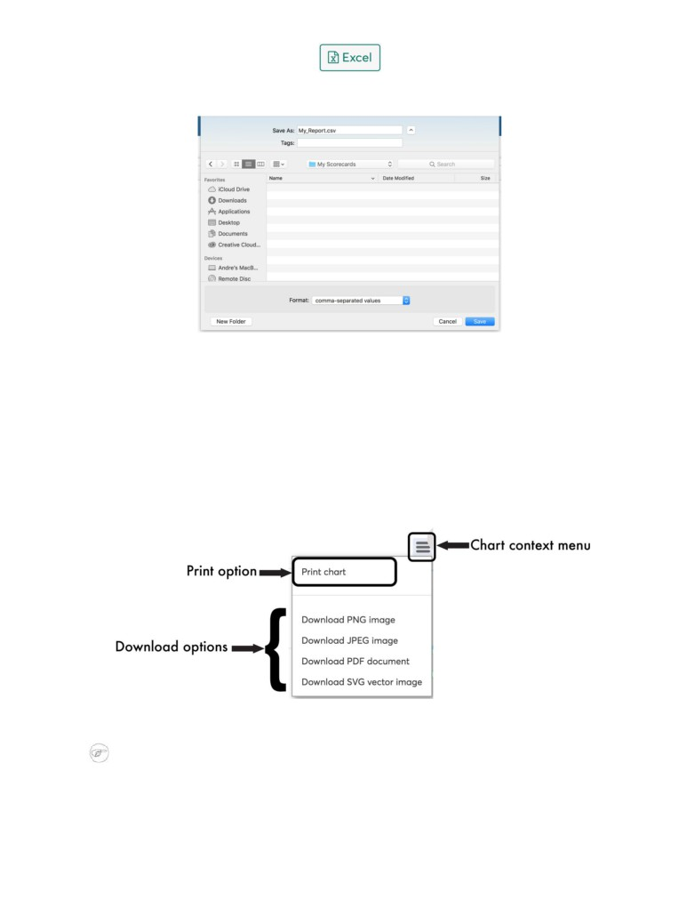
Fig 8.6.2-A: Excel download button that can be found on the bottom of the further analysis modal.
Fig 8.6.2-B:Downloading pivot table data into csv format.
8.6.3 Downloading and printing of chart on further analysis
To print or download the further analysis chart, clicking on the chart context menu this will give
options for downloading the further analysis chart.
To download just pick a file format of interest and click on it to initiate download.
To print simply click the word “Print”.
Fig 8.6.3-A: Print preview of Scorecard as PDF
Note
To hide headers and footer containing page url or page name, and get colored PDF document.
● On Chrome browsers, Expand “More settings” and untick headers and footer, choose
destination printer to “Save as PDF” to download colored PDF document.
● On Firefox, open “Options” tab and set header and footer to “--blank--”, choose
destination printer to “Print to file” to download colored PDF document.
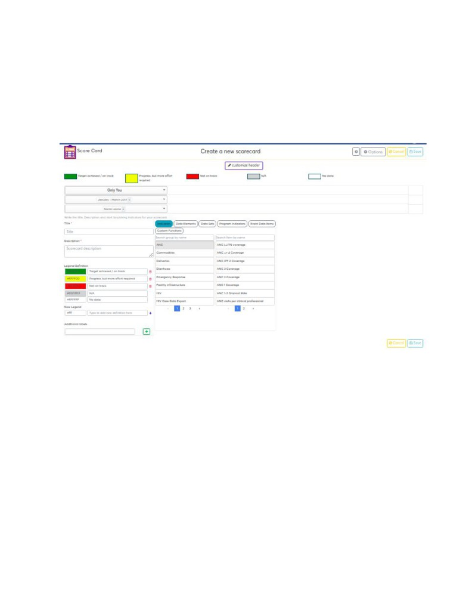
Chapter 9. Creating and managing
scorecard
Scorecard can be created via creation interface, which is accessible to “create” button on the top
right corner while on home/listing page.
Click “create”, to open scorecard creation interface. If not on home page, to access create button
from any page, go back to home/listing page.
Figure 9-A: Interface for creating scorecard
Once on the scorecard creation interface, scorecard can be created quickly in three simple steps
1) Labeling and branding of scorecard
2) Selecting data for the scorecard
3) Managing layout and saving
9.1 Labeling/Branding scorecard
Labeling of scorecard involves and branding involves filling in three main fields.
• Name, used for future search
• Description, used for detailed/deep search
• Custom header, for branding by placing banner on top of scorecard
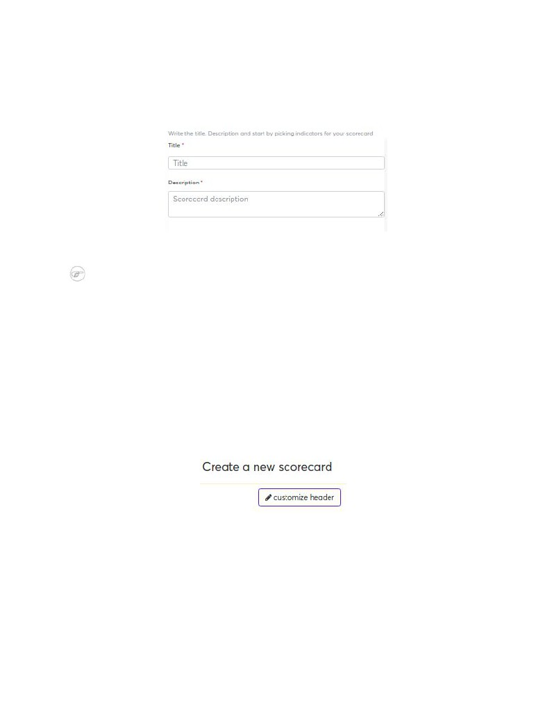
9.1.1 Labeling of scorecard
Start by labeling scorecard with name and description, that can be done by entering title and
description of scorecard on the middle left side of the scorecard. Title and description of
scorecard are mandatory fields to allow proper description of scorecard as well as allowing
search in the future.
Figure 9.1.1-A: Section for labeling of scorecard with name and description.
Note
Scorecard can not be saved without name and description filled in.
9.1.2 Branding of scorecard
Branding of scorecard is optional, by default scorecard uses name as heading of the scorecard,
which will be displayed on top of scorecard, custom header field is available to allow more
advanced customization and tailoring of scorecard.
Custom header, uses what you see is what you get(WYSIWYG) interface to allow complex
designs of headers supporting formatting of texts, alignments and insertion of images.
To edit custom header, locate “customize header” button, on the top center of the scorecard,
where header of scorecard will be displayed.
Figure 9.1.2-A: Button for customizing of scorecard header with WYSIWYG
9.2 Choosing your data selections
To choose type of data in your scorecard simply locate the section next to title and description
for selecting type of metadata, choosing group and picking metadata of interest.
Select all indicators/data elements/reporting rates/program indicators/event data items/ custom
functions of your choices, to insert them in scorecard columns.
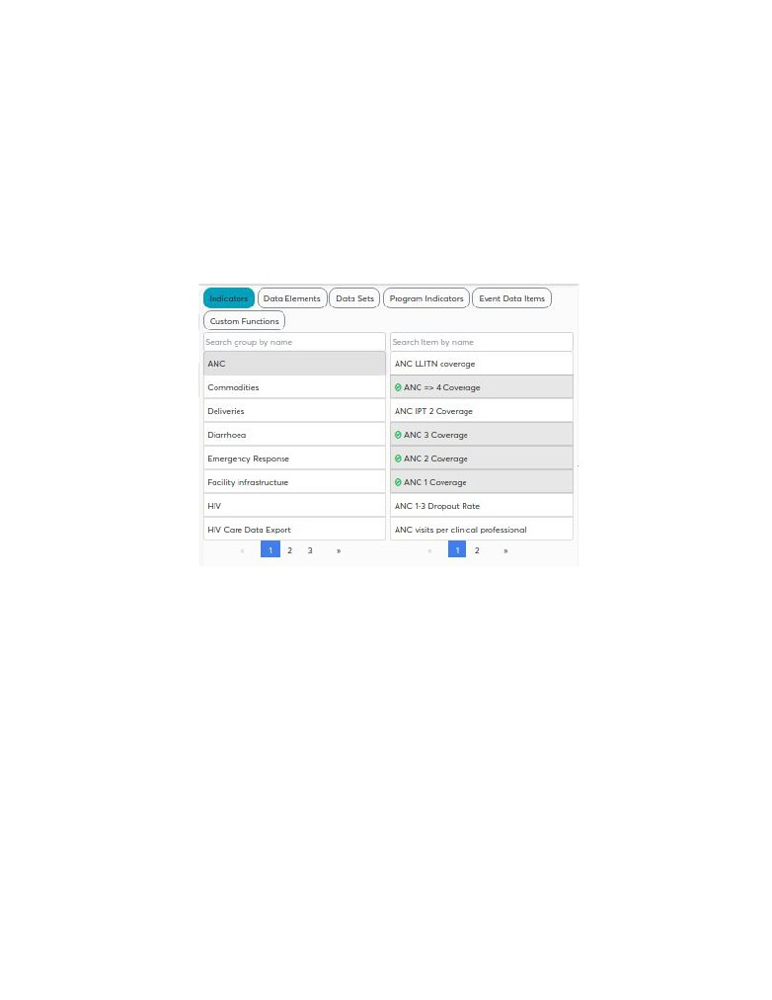
Selection of score-card is simplified, what you see is what you get interface, with real-time
simulation of scorecard layout.
Basic selection operations includes:
• Select an item to add it, or un-select to remove if from scorecard columns
• Drag and drop an item from the data selection to scorecard columns to add
• Click trash/delete icon on “Cell customization” area to remove it from scorecard
columns
Figure 9.2-A: Data selections for scorecard
Scorecard supports all data selections available in analytics applications, and supports more,
such as custom functions. Among the supported metadata selections includes:
• Indicator selection, selection of indicators is done by available groups
• Data element selection, selection of data elements is done by available groups
• Data Sets selection, selections in data sets includes, Reporting rates, Reporting rates on
time, Actual reports submitted, Actual reports submitted on time, Expected reports
• Program indicator selections, selection of program indicators is done by available
programs
• Event data items, selection of data items is done by available programs
• Custom functions, selection of custom functions is done by available functions
9.2.1 Standard analytics data selections
Standard analytics data selections are the selections available by default on all DHIS2 analytics
tools, such as pivot table, visualizer and GIS. These includes indicators, data elements, data set,
program indicators and event data items. All standard data sections, depend on the data sources,
thus possible period selections for given data selections should always be taken into
consideration
Note
Selection of data items who’s reporting frequency is smaller than default period selection of the
scorecard will cause the given indicators to always return empty(e.g. Monthly scorecard will
always return empty on indicators from quarterly data source)
9.2.2 Functions selections
Functions selections are extended analytics calculations supporting a more open-ended logic of
computation, such as logical operations, predictors and other complex analytics use cases. To
create functions to work with scorecard download, download function maintenance application
pure good old JavaScript(vanilla JavaScript) logic to do calculations purely on the browser,
without the need for server, this is accomplished by execution of JavaScript codes that expects
period and data selections and return standard DHIS2 analytics results.
Functions comprises of three key building blocks
1.
Input/Selection parameters. Function expects standard DHIS2 periods and organization
units selections.
2.
Computation logic. This is an open-ended workspace for writing of calculation logic to
work on given period and organization unit selections, computation logic is usually classified
into rules dimensions, thus allowing one function to support different use cases by defining
multiple rules that will control the computation logic. Possibilities are limitless, among major
operations done includes
1. Fetching data from aggregate and event analytics and modifying results with custom
logic, and reformat the results back in standard analytics format.
2. Fetching data from existing sql Views, performing custom logics and formatting results
in standard analytics format
3. Fetching data from other DHIS2 API endpoints(such as data-value and events api) and
other data sources(including external sources), performing custom logic and formatting
results in standard analytics format.
3. Output/Returned analytics. This is the end-result output from functions, formatted in
standard analytics format, to allow compatibility with standard DHIS2 analytics
applications.
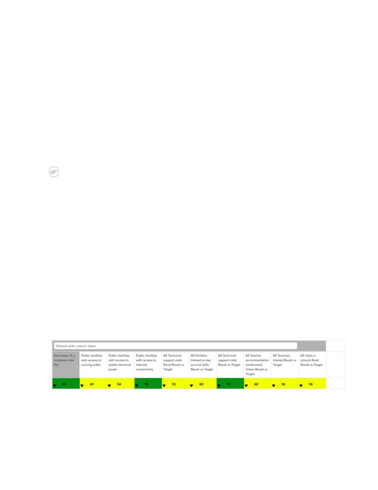
To support open-ended support for any level of complexity, function maintenance application
has been developed, to allow any developer with basic JavaScript knowledge to quickly develop
custom calculations either not supported natively by DHIS2 or to allow developer to
work-around limitations or miscalculations from standard analytics.
Main requirements for developing functions includes:
• Basic web programming knowledge with JavaScript (jQuery is an advantage)
• Understanding of DHIS2 Web API and analytics
• A working installation of Functions maintenance application. When a function
maintenance application is installed for the first time, it creates five standard
functions with generic use cases as example functions to allow reuse of codes to
create other functions. The auto created functions will also be listed in functions
selection list.
Note
The six generic functions that comes standard with functions maintenance, are auto generated if
no function exists in the system.
9.3 Managing layouts and saving
Once done with scorecard data selection process, a list of all selections will be appearing as
columns on the scorecard layout area. Scorecard will be in its most basic layout, and is ready to
be saved. Among the layout standards observations includes:
• All columns are grouped in single default group. Group label for default single group
is not displayed for simplicity.
• Values, colors and arrows for each column are auto-generated. Values are auto
generated to provide real-time what you see is what you get (WYSIWYG).
• Column labels picks default name of the selected metadata, labels can be changed,
see section “Customization of cells” section of this documentation.
Figure 9.3-A: Standard layout of scorecard, with what you see is what you get interface.
9.3.1 Changing layout of scorecard
To change scorecard layouts, simply click on column labels(text), to select column to move,
then simply drag and drop that column to a new position
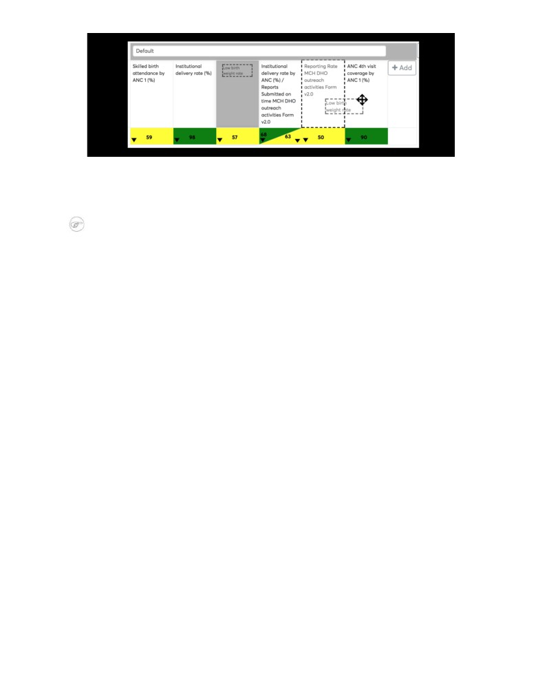
Figure 9.3.1-A: Rearranging column order of a scorecard by drag and drop.
Note
Click area for drag and drop feature is only active with the text inside the header field, clicking
outside the text doesn’t activate the click area.
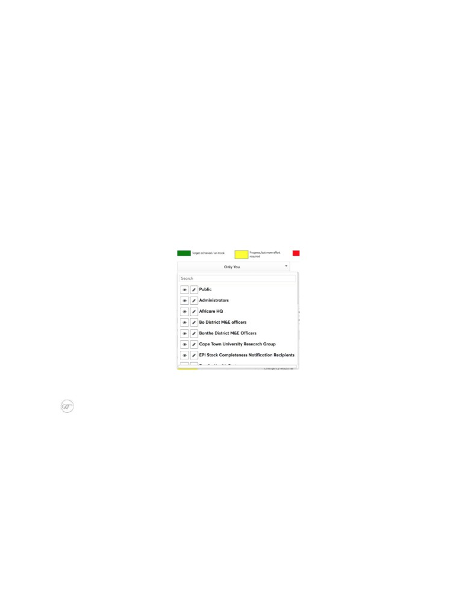
Chapter 10. Customizations and editing of
scorecard
You customize scorecard via the create/edit interface. Customization involves giving scorecard
custom headers, grouping cells, setting up the starting period and organization unit of scorecard,
setting access privilege to users and groups, adding custom labels and legend colors.
10.1 Access sharing settings
The scorecard give user to set sharing who has access to their scorecard and the privilege (view
only/edit) to the particular group of people that the share with.
Scorecard sharing can be done through the access sharing select option box, by clicking an
image representing a privilege for a group of interest.
When a privilege has been chosen for a group the color of the icon of the privilege will change
to blue.
Fig 10.1-A: Access sharing privilege setting settings across user groups
Note
The six generic functions that comes standard with functions maintenance, are auto generated if
no function exists in the system.
10.2 Startup period and organization unit selection
To set the startup period selection, head over to the period type select option button and click it,
this lists all the period types, from which you can select the desired period type and then add
the period range from the available list into the selected list.
In order to set the startup organization unit selection, head over to the organization unit select
option button and click it, this lists the organization units in hierarchical order.
More details on how to select the org units can be found under Organization unit selection in
the Analysis with the scorecard chapter.
Fig 10.2-A: Selection of the startup period
Fig 10.2-B: Selection of the startup organis
10.3 Grouping of cells in scorecard
Grouping of cells in scorecard can achieved in two steps.
● Creation of a group
To create a group click the word “Add” will appear on the rightmost column and a
new group will be created.
You can give the group a name by editing the words “New Group”
Fig 10.3-A: “Add” Icons that enable user to create a new group and data selections to the group
Fig 10.3-B: Placeholder (default name) of new group can be replaced with a desired group name.
● Adding data selections into the group
To add data selections into a group, make sure the group has been selected (has a
gray background/fill color) then follow the procedures to make data selection as
explained under Choosing your data selections in Chapter 9.
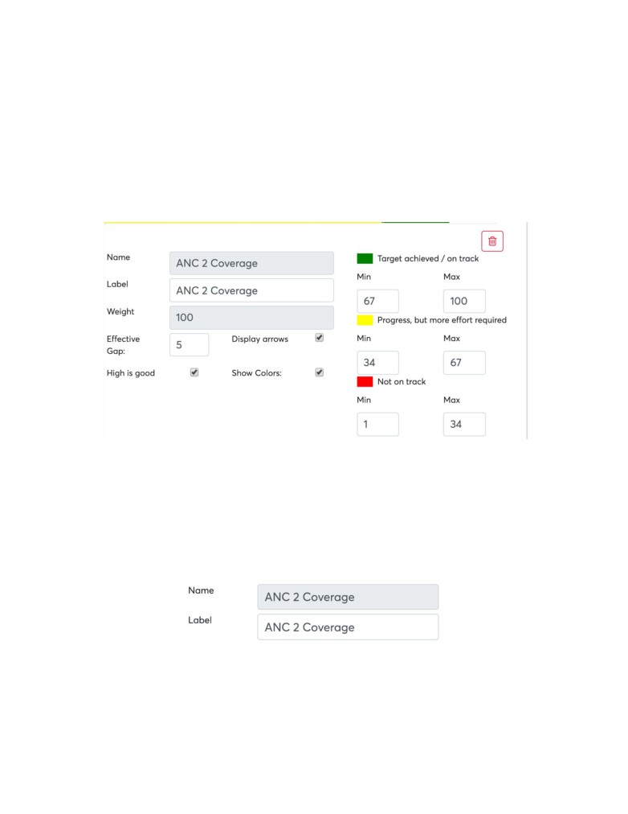
To delete a cell grouping just click the trash icon next to the group name.
10.4 Customization of cells
The scorecard app, gives user the ability to customize cells by giving them the tools that enable
them to choose:
● whether to display the color legends
● what colors to display on the scorecard and their cut point values
● the effective gap
● what labels display on the columns (headings of data selections)
Fig 10.4-A: Cell Customization section on the scorecard app
10.4.1 Column & cell labels
The scorecard app allows the user to customize the column/cell labels.
By default, the column label is the name of the data selection. To customize the column label,
edit the value on the box adjacent to the words “Label”
Fig 10.4.1-A: Column and cell labels text box
10.4.2 Cell Effective(Minimum) gap
To set the effective gap value of increase/decrease write the number in the input box adjacent to
the words “effective gap” and save changes.
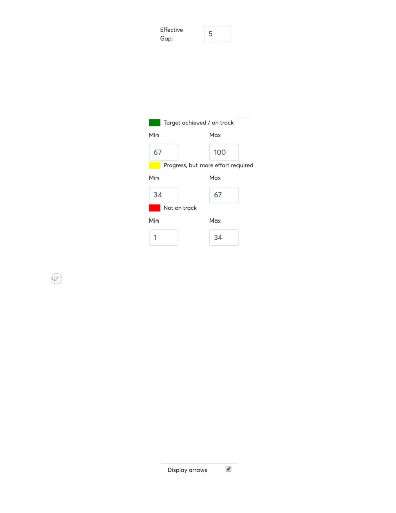
Fig 10.4.2-A: Cell Effective (Minimum) gap text box
10.4.3 Cell cut-of points range
To set the effective cell cut-of points range for a data selection (column), edit the min - max
values under the legend information of the data selection.
Fig 10.4.3-A: Cell cut-of points range
Note
Minimum of upper class should be equal to the maximum of lower class, no gap should be left
between classes, to leave open ended upper limit for topmost class and lower limit for lowest
class use dash “-”. The classification of values between intervals behaves as follow:
● Lowest and middle classes, values limit range from lower limit inclusive, to upper limit
exclusive(excluding upper limit itself, i.e. value equal to upper limit will be accounted in
next upper class)
● Highest class, values limit range from both lower and upper limit inclusive(i.e. values of
both lower and upper limit will be accounted in the same class, upper limit won’t be
excluded)
The ranges are automatically generated evenly between 1 and 100 range, divided by total
number of classes(default is three).
10.4.4 Display effective gap arrows
To display effective gap arrows of increase/decrease make sure the checkbox adjacent to the
“Display arrows” label is ticked. To hide effective gap arrows simply make sure the check box
is unticked.
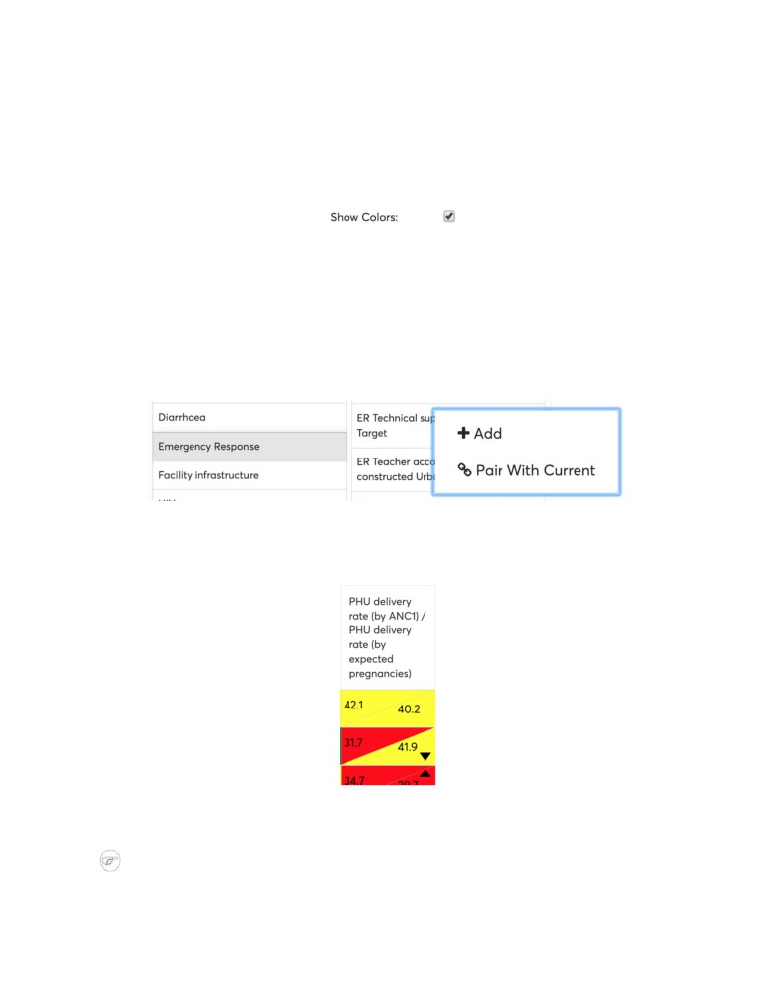
Fig 10.4.4-A: Opting to show effective gap arrows
10.4.5 Show legend colors
To show legend colors make sure the checkbox adjacent to the “Show Colors” label is ticked.
To hide Legend colors simply make sure the check box is unticked.
Fig 10.4.5-A: Opting to show the legend colors
10.5 Stack two cells in single column
To pair two cells in one single column, add one of the data items of interest scorecard in, click it
and make sure it is grayed (to indicate that it is the active data selection), then on data selection
area navigate to the second data item of interest and right click on it and select pair with current.
Fig 10.5-A: Clicking “Pair With Current” stacks the active data selection to the new data selection
Fig 10.5-B: Column stacking demonstration with the PHU delivery rate (by ANC1) against the PHU delivery rate
(by expected pregnancies)
Note
Pairing of indicator is useful when presenting two indicators measuring same goal(e.g. ANC 4th
visit coverage by 1st visit and ANC 4th visit by total population of women of childbearing age),
or placing many indicators in single page(e.g. A4 paper comfortably fits around 15 columns on
portrait, thus with stacking can fit up-to 30 indicators)
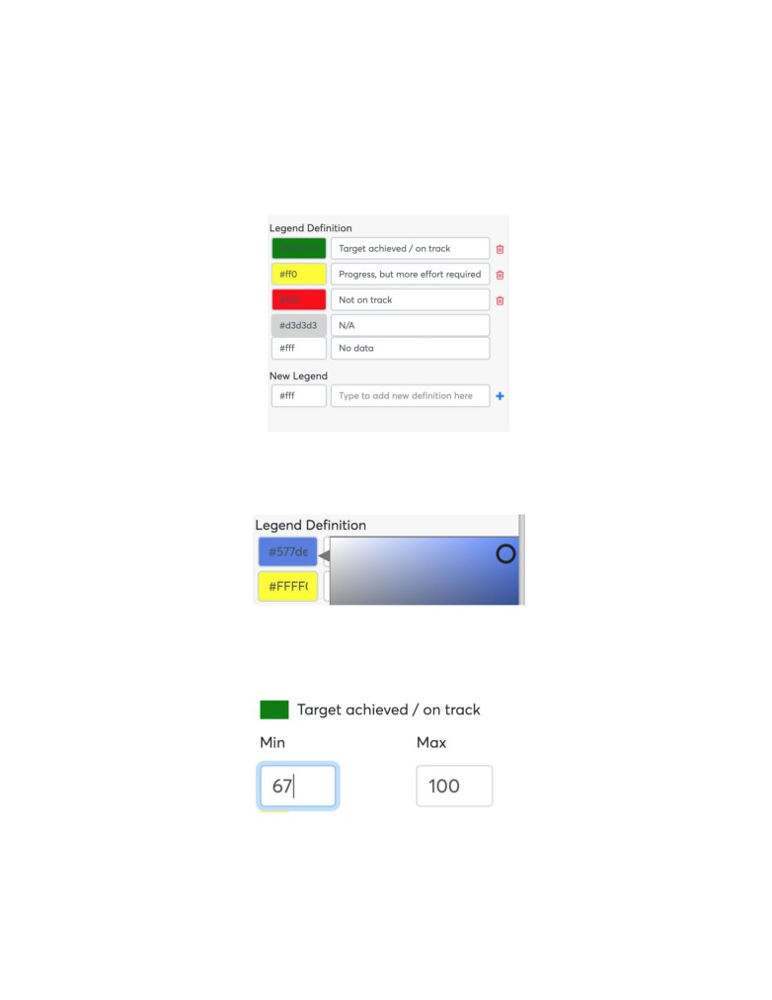
10.6 Color codes for cut-off points
The scorecard application allows you to customize the color code for cut-off points by changing
the existing color codes or by creating new color codes and defining their range.
To change an existing color code, navigate to the legend definition section, click on the color of
interest and pick another color from color picker.
Fig 10.6-A: The legend definition section with a list of color codes.
Fig 10.6-B: To change color code of an existing legend color.
Fig 10.6-C: To change the value of the cut-off points for a color code.
To add a new color code definition, navigate to the the “New legend” section. To define color of
legend click button on the left and pick color from the color picker.
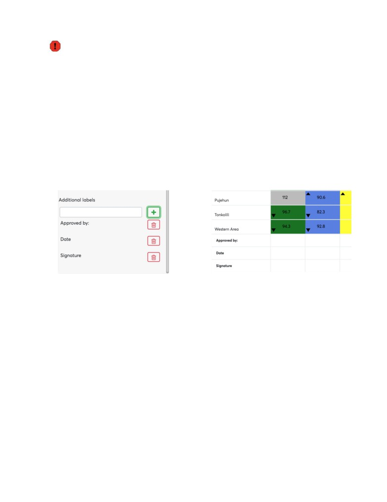
Warning
Adding new color definition resets all defined value ranges for all indicators back to default
range(i.e. ranging from 1 - 100 divided evenly by new number of classes). Always revisit all
indicators after adding/removing classes to update new class ranges based on new classes.
10.7 Additional labels
The scorecard app allows the user to add additional labels that will appear under the
organization unit. Such labels can be used for variety of purposes, common usage includes
● Source of indicator
●
Fig 10.7-A: The additional labels section showing
Fig 10.7-B: The Added Additional labels appearing
a listing of the additional labels.
on the scorecard.
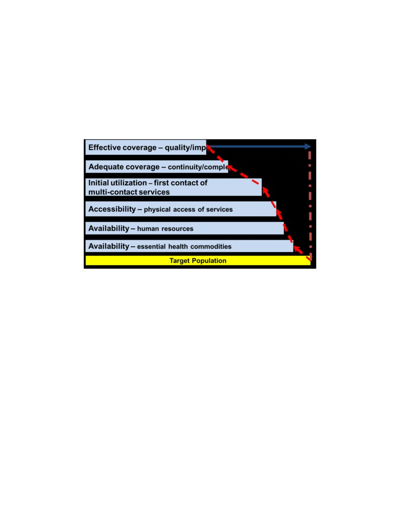
Chapter 11. Bottleneck Analysis
This chapter focuses on utilization of scorecard indicators to determine bottlenecks in a given
intervention. Bottleneck analysis is a systematic way to look at the main determinants of
effective coverage for selected interventions to identify problem areas and purposely act on
them
There are six coverage determinants, from supply to demand side that analyze where health
system bottlenecks exist. A bottleneck is a loss of system efficiency
Fig 11-A : The six coverage determinants, from supply to demand side which analyze where health system
bottlenecks exist.
The combination of bottlenecks identified determines the quality, and hence the effectiveness,
of coverage in any given setting.
11.1 Measuring Determinants
Among the modifications made on the efforts to adapt the Tanahashi approach for use in
Marginal Budgeting for Bottlenecks tool in the 21st Century include focusing determinants of
effective coverage.
Each determinant was analogous to a Tanahashi stage that leads towards the goal of effective
coverage. In addition, ‘availability’ was divided into two determinants: availability of
commodities and
availability of human resources
Ultimately the combination of bottlenecks identified determines the quality, and hence the
effectiveness, of coverage in any given setting.
This modified model was easier for practitioners to use since it reflected the types of data that
were available and permitted the identification of bottlenecks through a step-wise approach that
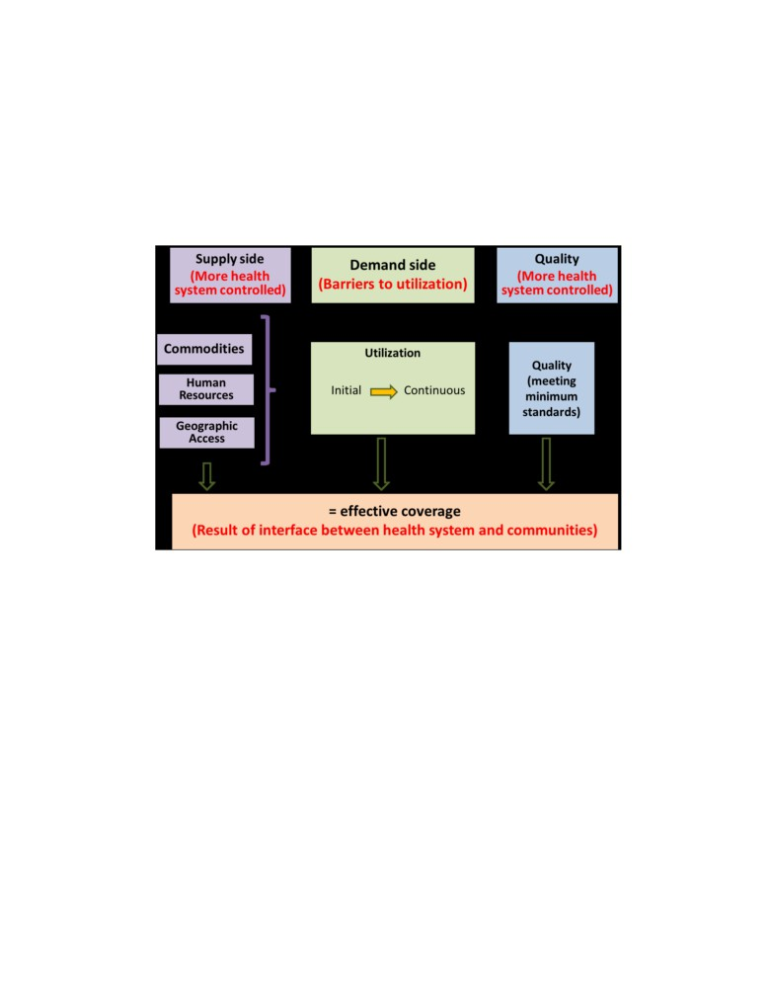
evaluates six determinants of the effectiveness of coverage of an intervention:
1.Availability of essential health commodities
2.Availability of human resources
3.Accessibility of distribution points for the interventions
4.Initial utilization of interventions
5.Continuity/completeness in the continuous utilization of interventions
6. Quality of interventions delivered.
The first three determinants focus mainly on supply side constraints, while the final three focus
largely on demand side barriers.
Fig 11.1-A: Block diagram grouping the Measuring Determinants in three categories and detailing the relationship
between the six determinants of the effectiveness.
While there are many national policies and guidelines for effective interventions to reduce
maternal and child mortality, these interventions do not always reach those who need them most
due to bottlenecks within and outside the health system.
The scorecard app allows for the user to add related indicators to an indicator so that they may
inspect the impact of the relating indicators by further analysis. The next subchapter explains
how the use can do this.
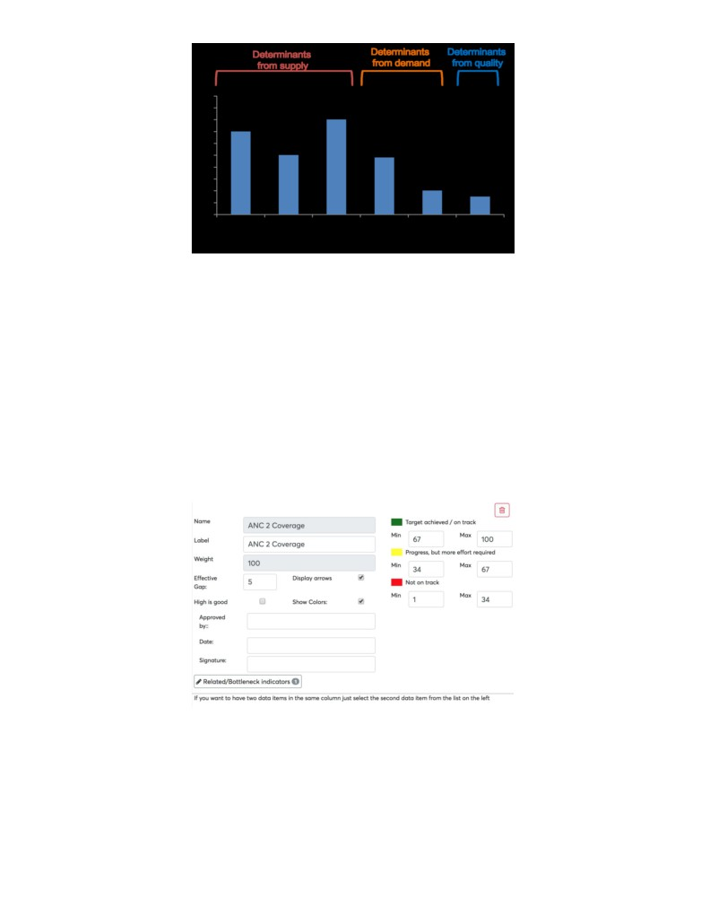
Fig 11.1-B: A bar graph of bottlenecks identification.
11.2 Bottleneck indicators
In scorecard bottleneck indicators are associated with scorecard indicators, and can be added to
scorecard indicators on the indicator cell customization area. In different scorecard use cases,
bottleneck indicators are referred as related indicators.
The relations between indicators in scorecard and indicators for bottleneck analysis initiated in
the edit interface.
To add bottleneck indicators to a data selection, click the data selection and navigate to the
column customization section and click on the Related/Bottleneck indicators button
Fig 11.2-A: Addition of bottleneck/related indicators.
Bottleneck indicators in chart visualization, can be implemented in two simple visualizations,
this includes
1. Multiple indicators per determinant, using determinant as a group, with
indicators names for each bar and determinant name as group in the chart
x-axis.
2. Individual indicator per determinant, where one determinant have one indicator
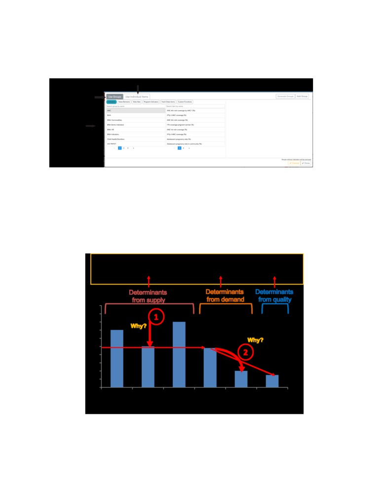
11.2.1 Individual indicator selections
For individual indicator selection in related indicators for scorecard, If the related indicators
belong to a group of the same context, then they can be added as individual indicators.
Figure 11.2.1-A: Making selections of related/bottleneck indicators on the data selection section.
In bottleneck analysis, where each determinant have single indicator for measurement,
individual indicator selection is the best choice for data analysis.
Among use cases of individual indicator selection includes causality analysis across six
measurement determinants to assess potential fluctuation of trends across determinants (notice
each determinant have one indicator used).
Figure 11.2.1-B: Causality analysis fluctuation of trends across the six measurement determinants
To add individual related indicator selections, click “Use Individual Items” and make your data
selections.
When a selection is made a card will appear to right with the name of the Indicator, the display
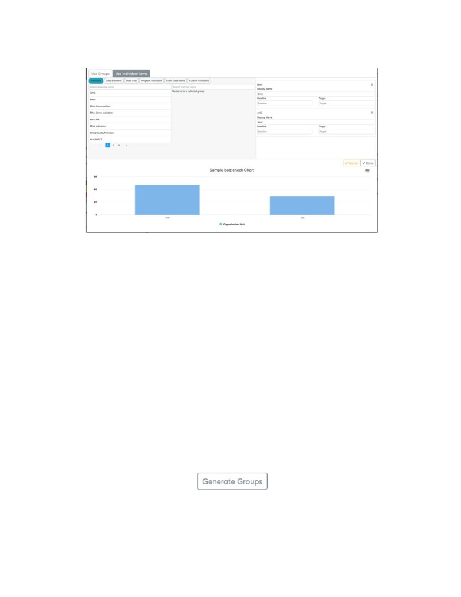
name, baseline and target. Also a real-time bottleneck chart shall be displayed on the bottom.
Display Name, Baseline and target can be edited.
Fig 11.2.1-A: Selection of grouped indicator selections together with a real-time bottleneck chart.
11.2.2 Grouped indicator selections
For grouped indicator selection, If the related indicators belong to different groups, then they
should be added as group indicators.
In bottleneck analysis, where one determinant can have multiple indicators, grouped indicator
selection is the best choice for analysis, where determinants can be created as groups and
indicators can be inserted to given determinants.
11.2.2.1 Managing groups
To add group related indicator selections, click “Use Groups”. There are to ways of creating
grouped indicators :
● Generating groups
● Manually creating group
For grouped indicator analysis following standard bottleneck determinants, determinant groups
can be auto-generated by clicking “Generate Groups” button which will generate determinant
groups ready for inserting indicator per each determinant.
Fig 11.2.2.1-A: The generate groups button.
To create a group manually, click the “Add Group” button
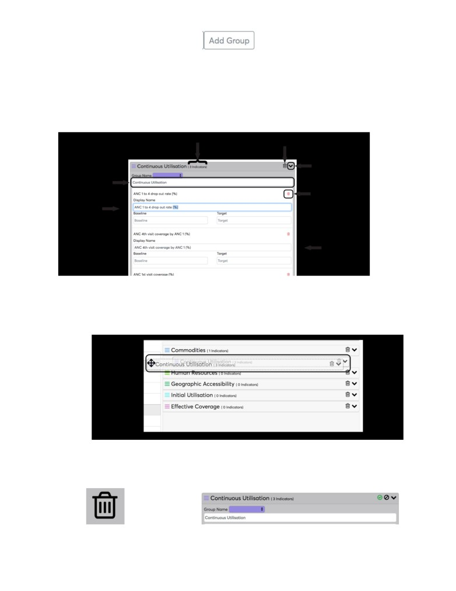
Fig 11.2.2.1-B: The add group button.
To make data selections to the groups, first click the group click on the group name the click the
data selection of interest on the data selections section.
Fig 11.2.2.1-C: A group of bottleneck indicators
You can sort/rearrange indicators within a group by dragging them from their current position to
a destination position.
Fig 11.2.2.1-D: Sorting of indicators by dragging and drop
To delete data selections click the trash icon on the Group Title then click the tick icon.
Fig 11.2.2.1-E: The trash icon.
Fig 11.2.2.1-F: To complete the delete action click the tick icon
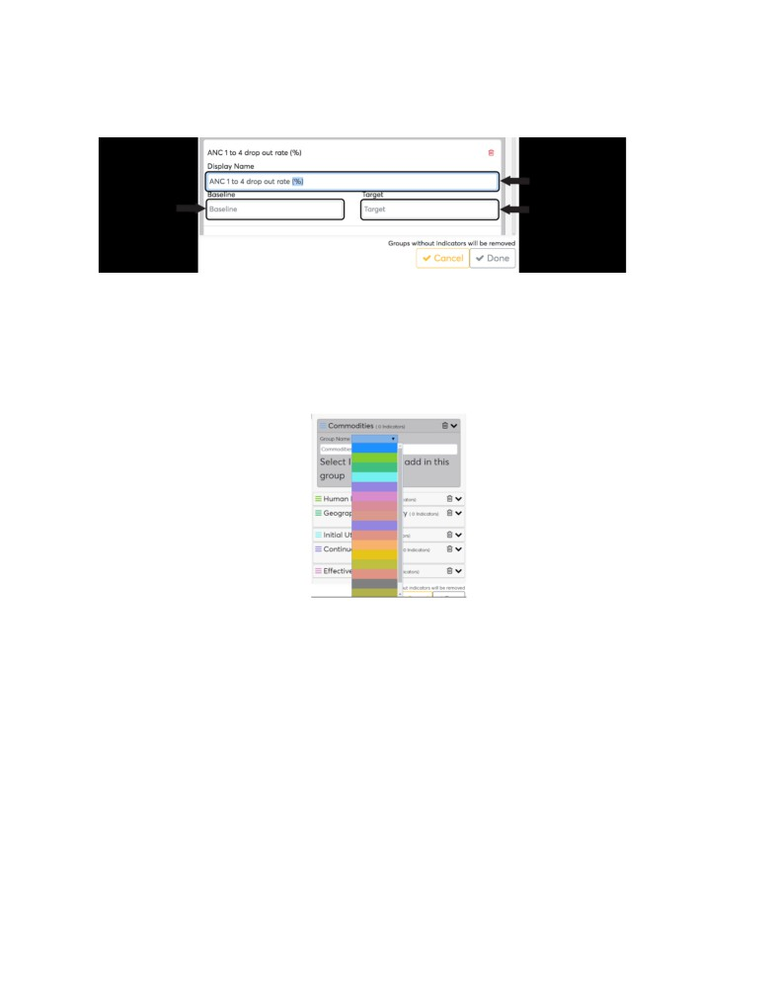
11.2.2.2 Managing labels of grouped indicators
When a selection is made a card will appear to right within its group with the name of the
Indicator, the display name, baseline and target. Display Name, Baseline and target can be
edited.
Fig 11.2.2.2-A: Editing labels of an indicator
11.2.2.3 Color coding indicator by their groups
The related indicator groups are color coded so as the user can easily distinguish between
indicators of different groups. The color codes can also be changed by simply clicking the color
bar above the group name input box, and selecting a color of interest.
Fig 11.2.2.3-A: Selection of color scheme for indicator selections that belong to a group.
11.2.2.4 Real-Time Bottleneck Chart
When a selection is made a real-time sample bottleneck chart shall be displayed on the bottom
of the section.
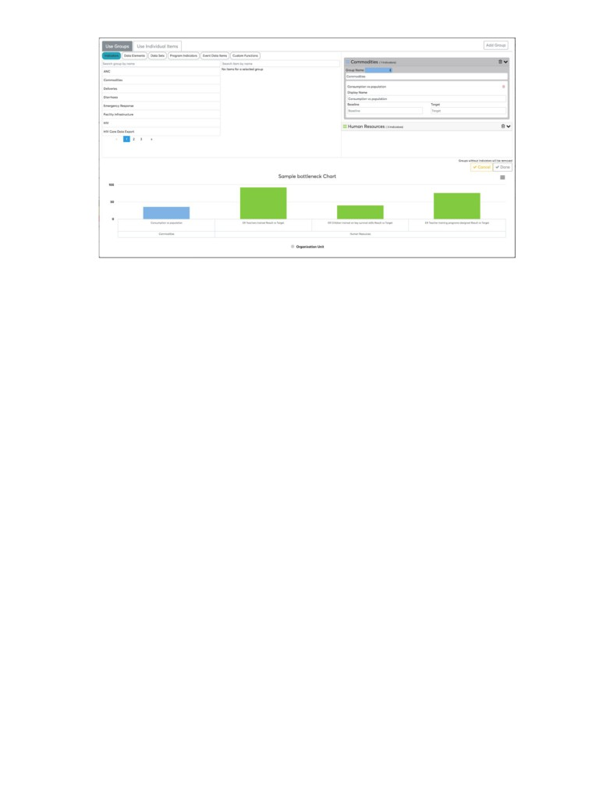
Fig 11.2.2.4-A: Selection of grouped indicator selections together with a real-time bottleneck chart.
Chapter 12. Help, tour guide & translation
The scorecard offers a quick guidance to get the user started off with using making use of the
basic features of the app, user documentation can be accessed from within the app as will be
explained in this chapter.
Fig 12-A : Options available on clicking of the help button
12.1 Tour guide
To get a brief tour of navigation across the scorecard app simply click the Help icon and choose
“Take a tour” and a floating pop-up will appear hinting on some basic navigation that user can
use to analyze with scorecard.
Fig 12.1-A : The sample of a tour guide floating pop up showing where the user can make their organization unit
selections.
12.2 Help and documentation
The documentation of the scorecard app is accessible through clicking the “User Manual” from
the Help dropdown menu. This will open the documentation of the scorecard app.
12.3 Translations
The scorecard app offers basic translation for up to three languages, French, Portuguese and
English.
By default, the app opens up with English Language.
To change Language to French, click Fr.
To change Language to Portuguese, click Pt.
Chapter 13. Scorecard community and use
cases
Scorecard development and implementation is community driven by HISP Nodes and UNICEF
globally. As it is an open source software, it’s source codes are available on github for
contribution.
Contributions on scorecard community can be on the following areas:
1. Development and Testing of scorecard application
2. Documentation and translation of scorecard application
3. Implementation of scorecard and experience sharing with community
13.1 How to be part of the community
Scorecard development and implementation is a DHIS2 Community driven development and
implementation initiative. The best way to join the DHIS2 Community is to sign up for the
mailing lists.
1. Start by creating a user account at Launchpad .
2. If you are interested in the usage, setup or implementation of DHIS2 you can sign up for
3. If you have questions about or want to follow the development process you can sign up for
4. If you want to participate in writing documentation signing up for the documenter mailing
Don't hesitate to get in touch if you are interested in using DHIS2 for your organisation or
government. We can be reached through the contact details below. For technical questions or
questions related to scorecard implementation please sign up and use the mailing lists as
described above.
Email
● DHIS2 - post@dhis2.org
● DHIS2 Academies - post@dhis2.org
● The DHIS2 Online Academy - onlineacademy@dhis2.org
Office address
Ole Johan Dahls Building
Gaustadalléen 23 B
0373 OSLO
Norway
You can find directions to our offices here .
13.2 Development and implementation
DHIS2 uses JIRA for issue tracking. You can use it to report bugs and request new features.
You can search for features to get an overview of which features make it into each release.
13.3 Documentation and Translations
The Scorecard app documentation is available in google docs from here. You can recommend
your changes by commenting on the topic of interest in the document.
The Scorecard user interface is translated to a range of languages including English, French and
Portuguese. Efforts for improving the existing translations or adding new languages are much
appreciated.
There are two approaches to contributing to the translations.
(download under Miscellaneous)
13.4 Data use academy scorecard setup and use
cases
Scorecard has been added as one of the suite of analytics application in DHIS2 array of
analytics use cases, to enrich data use experience of DHIS2 implementers.
Scorecard utilises training land setup with select few set of indicators based on global RMNCH
use cases to allow implementers to get first hand experience of scorecard use cases and how it
can be used as a powerful real time tool for data use discussion, bottleneck analysis as well as
formulation of action and tracking of progress.
13.5 Existing DHIS2 Scorecard app use cases
Countries and institution are slowly adopting use of interactive scorecard application to leverage
simplicity of scorecard creation process as well as interactive user experience during analysis,
among the major functionalities cited as handy features that triggers adoption of scorecard
application uses includes:
1. Ability to drill down and up the organization unit hierarchy, will supporting all possible
organisation unit selections
2. Ability to navigate scorecard across time as well as presentation of data with more than
one period selection
3. Ability to perform further analysis with charts, table and maps, as well as indicator
dictionary overview on numerator and denominator definitions, calculations, data
sources and related aspects of data quality such as deadlines of data sources.
Below are select few interactive scorecard application use cases across various country
implementation use cases.
13.5.1 Tanzania's RMNCAH Scorecard
The Tanzania RMNCH scorecard was first produced using the African Leaders Malaria
Alliance (ALMA) RMNCH scorecard tool from January 2014 to June 2016; and from July
2016 to December 2016 the RMNCH scorecard is being produced using the HMIS/DHIS2
RMNCH scorecard tool.
The Ministry of Health, Community Development, Gender, Elderly and Children with
technical support from the University of Dar es salaam is now utilizing generic scorecard tool
to support customization of the Ministry’s scorecards with focus on revised RMNCH
scorecard.
Among goals of moving to utilizing generic scorecard includes:
● To fast track the scorecard generation, dissemination and use cycles and thereby introduce
room for more data use, transparency and accountability at all levels (Council, Region,
National) during all cycles of the scorecard generation.
● Addition of supports of generic functionalities such as drill down on organization units,
navigation across period and further analysis supported by generic scorecard.
● Facilitate the ministry’s initiative of generating scorecards for different types of health
sector interventions within HMIS/DHIS2.
Figure 13.5.1-A: RMNCAH Scorecard adopted from ALMA’s RMNCAH scorecard
The above scorecard have been implemented utilizing all possible functionalities such as
presentation of twin and related indicators under single column. More initiative expected to
support incorporation of impact indicators presented separately on scorecard header originating
from census and surveys opposed to the majority of routine data source indicators enlisted in
scorecard rows.
13.5.2 Tanzania's PMTCT Scorecard
The Ministry of Health and Social Welfare (MOHSW) through Prevention of Mother to Child
Transmission of HIV program (PMTCT) in its efforts to improve PMTCT services at all levels,
initiated development of PMTCT scorecard with technical support from University of Dar es
salaam. This initiative aimed at improving quality of PMTCT services to active data use with
scorecard.
PMTCT scorecard contained 10 cascade indicators measuring PMTCT interventions with the
following rationales:
1. To assess HIV Testing coverage among Pregnant women receiving ANC services at RCH
2. To assess proportion of registered HIV positive women on ART. (Applicable for baseline
values)
3. Measure PMTCT retention and infant testing coverage
4. Measures early MTCT, indicates effectiveness of PMTCT in the pregnancy period
5. Coverage of testing at the end of breastfeeding
6. To assess Impact of interventions up to the end of breastfeeding
7. Measures overall MTCT rate up to the period of cessation of exposure to HIV virus through
Breastfeeding
Figure 13.5.2-A: PMTCT Scorecard measuring cascade indicators
13.5.3 Tanzania's QIP Scorecard
The Ministry of Health and Social Welfare (MOHSW) through Quality assurance division aims
at improving quality of service provision at health facilities through assessment of four domain
areas of service provisions.
Among the key objectives of Quality Improvement plan(QIP) scorecard includes:
● Creation of transparent mechanism for tracking implementation of formulated quality
improvement plans across four quarters for each annual assessment.
● Systematically identify facilities areas of implementation challenges and gaps for
re-strategizing and reprioritization of plans
● Provide appropriate suggesting improvement steps to effectively implement formulated
quality improvement plans
QIP Scorecard presents facility performance based on most recent facility assessment or routine
follow up information about.
Figure 13.5.3-A: QIP Scorecard for measuring quality improvement on gaps
13.5.4 Uganda's RMNCH Scorecard
In November 2013, Uganda launched a Renewed, Sharpened and first Integrated Reproductive,
Maternal, Newborn and Child Health (RMNCH) plan with clear goal, objectives, priorities and
5 strategic shifts in order to employ new ways of combating RMNCH challenges. The plan aims
to accelerate reduction in maternal, newborn and child mortality and improve on Uganda’s
RMNCH indicators. In order, to track progress against the ambitious goals and targets, a
deliberate effort to track performance must be invested.
Therefore, the endeavor of developing and implementing the Uganda RMNCH Scorecard is in
line with global initiatives including A Promise Renewed (APR), UN Commission on
Information and Accountability among others. Under the APR initiative, the Ministry of Health
progressively institutionalizes a national and sub national RMNCH scorecard based on routine
Health Management Information System (HMIS) data and the District Health Information
System (DHIS2) platform.. The scorecard is also aimed to facilitate health facilities to review
their performance within the quality improvement framework.
[Sample picture of Uganda’s RMNCH Scorecard]